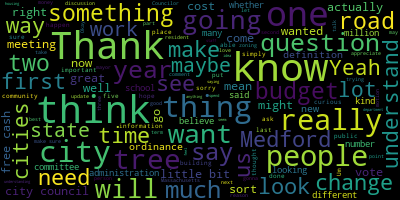

[Callahan]: Present
[Callahan]: I would love to hear more about the last one, state aid, chair sheets, and other things.
[Callahan]: Thanks.
[Callahan]: Is there somewhere that we can look up what new growth has been in previous years?
[Callahan]: Councilor Gallagher.
[Callahan]: Sorry, that $250,000 is included in your new growth figure from before?
[Callahan]: This $250,000 is included in the new growth figure from the previous year?
[Callahan]: So just a quick question, if you happen to have these numbers off the top of your head, if not, I can look it up later.
[Callahan]: On this fiscal year 2025 budget impacts with these four sort of unavoidable cost increases, do you happen to know for each of those what sort of percentage of our budget those are?
[Callahan]: Like, what is the health insurance, you know, what about what percent of our budget?
[Callahan]: If not, that's fine, I'll finally look at it.
[Callahan]: Can you just let me know a little bit more about what those, these two, 5240 and 5310 are, what those cover?
[Callahan]: Yes, maintenance and professional technical services.
[Callahan]: Present.
[Callahan]: Yes.
[Callahan]: Yes.
[Callahan]: No
[Callahan]: As far as the question of getting proper budgetary information out of the administration.
[Callahan]: I believe that's an entirely separate discussion, I agree that that's a big problem, and we as a city council have been working.
[Callahan]: I even before I got on the city council to make sure that that's a more transparent process that the mayor is asked
[Callahan]: and has been asked repeatedly and now has to follow a schedule to provide information this is something that this city council and the city council before me has worked very hard on.
[Callahan]: So this is not something that we are ignoring this is something we are working very hard to make sure happens, but it is a totally separate issue from whether
[Callahan]: we have 12 month availability of free cash, essentially, or if we only have free cash after it has been certified, which can take six to nine months.
[Callahan]: So that is what this question is, is a question of whether we have, as a city, have availability of that free cash for 12 months, or whether we have availability for that free cash only after it has been certified six to nine months later.
[Callahan]: I completely agree with many of the people who spoke here that the city
[Callahan]: The roads are in terrible condition.
[Callahan]: Our school buildings are in terrible condition.
[Callahan]: Our school budget is not anywhere near large enough for the amount of teachers that we need.
[Callahan]: I completely agree with those sentiments and that reality.
[Callahan]: I believe that it's because of decades of underfunding of this city, because that is why the roads have come to the point where they have come, and why the school buildings have come to the point where they have come.
[Callahan]: That is also a separate issue from the question of whether we have year round access to essentially free cash, or whether we can cannot access that free cash for the first six to nine months.
[Callahan]: So, to me, this really is a question simply of whether, and I appreciate cancer Scarpelli for your consideration for the newer city Councilors of which I am one.
[Callahan]: I would not mind a little bit more time to understand this.
[Callahan]: But I will say that it seems quite clear to me that, first of all, we're not taxing anybody.
[Callahan]: We're not increasing the funds.
[Callahan]: No, no, no, no.
[Callahan]: This literally does not have to do anything with that.
[Callahan]: It converts free cash from something that we cannot access to something that we can access.
[Callahan]: And that free cash is literally
[Callahan]: what happens when the income that comes into the city and the budget that goes out of the city, the actual spent budget that goes out of the city differ, which they have to do, or else you don't have a bond rating.
[Callahan]: So understanding the budget of the city and how it functions, I do believe that creating this fund is the smart thing to do.
[Callahan]: And I'm willing to vote on this tonight.
[Callahan]: Thank you.
[Callahan]: Yes, I know that on that lot right now, there are a lot of wonderful tall trees that block the busy Broadway street from those other streets that are a little bit further in.
[Callahan]: Can you talk a little bit about the proposed green space and whether there will continue to be trees there or be new trees planted, aside from the pocket park?
[Callahan]: They're quite lovely and tall.
[Callahan]: Yes.
[Callahan]: I am going to reiterate what has been already said a number of times.
[Callahan]: All we are voting on tonight is whether we are allowed to discuss this topic.
[Callahan]: So anything that comes before us has to get a number and go to committee.
[Callahan]: That's how we start the process.
[Callahan]: That's how we have a discussion.
[Callahan]: That's how we also continue to get public input as we craft any sort of legislation of any kind.
[Callahan]: We literally don't have a single word written about what kind of transfer fee we would do because we can't until we get a number and we send it to committee.
[Callahan]: And this is going to take months because we're going to take a lot of input from the committee.
[Callahan]: So as far as having a well-functioning democracy and being able to discuss important issues, this is how it starts.
[Callahan]: We're only voting on whether we can discuss this issue.
[Callahan]: So that is what we're voting on tonight.
[Callahan]: I also really want people to have a little bit of understanding.
[Callahan]: I know way too much about state politics.
[Callahan]: And I can tell you that of any communities that have passed a real estate transfer fee, as with many other housing related issues, the state does not approve them.
[Callahan]: So what is going to happen
[Callahan]: is if we are lucky enough to pass anything,
[Callahan]: that is related to a real estate transfer fee.
[Callahan]: It will not be approved by the state.
[Callahan]: The only thing likely to come out through the state is what is gonna be very similar to Governor Healey's proposition.
[Callahan]: Governor Healey's proposition, just so you know, is 1% on either side.
[Callahan]: Nothing will affect anyone who sells a house less than a million dollars.
[Callahan]: And the only tax is on what is over a million dollars.
[Callahan]: So if you sell your house for $1.1 million, the total tax for you is $1,000.
[Callahan]: So, you know, I hope I can assuage some people's fears.
[Callahan]: And I really hope that we can have a respectful discussion tonight and that you all can participate in our many months long discussion that we hopefully will be about to begin.
[Callahan]: that will happen in perfectly open committee meetings, which we invite you all to come to.
[Callahan]: Thank you.
[Callahan]: Thanks, just point of personal privilege and I appreciate the opportunity in case other folks, maybe I misspoke or people didn't understand what I said earlier.
[Callahan]: I was not saying that if we pass something like this, it will never get through the state house.
[Callahan]: What I was saying is that the likelihood that our version, that any version we pass is different from Governor Healey's version is very low.
[Callahan]: And what that means is that it will be a 1% tax
[Callahan]: on buyer or seller, it will only affect homes over a million dollars and only the amount of money over a million dollars.
[Callahan]: That was the reason that I brought up how difficult it is to pass through the statehouse.
[Callahan]: And thank you for giving me the opportunity to restate that.
[Callahan]: I apologize.
[Callahan]: Can you, we are voting to do what exactly?
[Callahan]: Thanks.
[Callahan]: I'm curious if we know how other cities are currently doing this.
[Callahan]: Nobody knows.
[Callahan]: Okay.
[Callahan]: That's something we might want to look into is see some of our surrounding cities, how they deal with food trucks, and if they all have to go to the city council, if they just have it done by, you know, the administration.
[Callahan]: I just had a question because it sounds like what the attorney is saying is that according to our laws, we only have the ability to give permission for these food trucks on public ways and all the other entities like the parks and the schools do their own
[Callahan]: food truck licensing.
[Callahan]: What it sounds like Councilor Scarpelli is saying is that this is not the practice that we have done, and it is also perhaps not what our former city solicitor said.
[Callahan]: So to me, that makes things a little muddy.
[Callahan]: And I would love to have, I mean, maybe that's just the reality, but if there can be any clarification on that, I think it would help us understand.
[Callahan]: Present.
[Callahan]: Could you just talk a little bit more about the data processing, what it covers, what the systems are?
[Callahan]: Thank you.
[Callahan]: Yes, wonderful.
[Callahan]: Thank you both so much for being here and for all the work that you do all the time.
[Callahan]: I'm just curious, again, one of the newer city councilors.
[Callahan]: about how the estimates for court time work looks like from 40 to 60K and just curious about how you budget for that.
[Callahan]: Present.
[Callahan]: Yes.
[Callahan]: Yes.
[Callahan]: Yes.
[Callahan]: Thank you.
[Callahan]: Thank you, Madam Mayor, for being here, for all the work that you have done on the budget and providing us with the information early, and also on working on these proposals.
[Callahan]: People who know me will know that I believe two things.
[Callahan]: One, I believe in democracy, and two, that I believe that this city has been underfunded for many, many years.
[Callahan]: So...
[Callahan]: to the first point, again, as Councilor Tseng mentioned, we are not voting to approve of these monies.
[Callahan]: We are voting to allow
[Callahan]: the people of Medford to make this decision.
[Callahan]: And I think that we need to do that.
[Callahan]: To me, that is the most important thing, is that we not, the only thing that we could do now, tonight, that would be the most undemocratic thing to do, would be for us to refuse to allow the voters to make this decision, right?
[Callahan]: That would be undemocratic.
[Callahan]: So that's my first point.
[Callahan]: My second point is about the chronic underfunding of the city.
[Callahan]: And while I certainly am all for new growth, I think it simply doesn't add up if you look at the reality of the funding of the city and at what we need in order to not be financially irresponsible.
[Callahan]: The problem is that costs rise faster than Prop 2.5 allows us to raise taxes.
[Callahan]: And if we simply look at the budget, we can see that in many ways.
[Callahan]: So the largest portion of the budget is our schools.
[Callahan]: The second largest portion of the budget is insurance.
[Callahan]: Insurance is going up.
[Callahan]: We do not have any control over that.
[Callahan]: It is going up higher than we are allowed to raise taxes.
[Callahan]: The third one is pensions.
[Callahan]: Pensions we also do not control.
[Callahan]: Those are the top three.
[Callahan]: After that come police and fire.
[Callahan]: And the fourth one after that is roads.
[Callahan]: I want to talk about roads.
[Callahan]: So I just want people to understand that these costs, many of them are going up.
[Callahan]: They are uncontrollable by the city.
[Callahan]: And they're going up faster than we are allowed to raise taxes.
[Callahan]: So this simply is something that, you know,
[Callahan]: It's math, you cannot make those numbers match.
[Callahan]: I want to talk about roads because we had a great meeting with the Commissioner, the DPW and one of the engineers.
[Callahan]: There was a roads assessment done.
[Callahan]: If people have not looked at that roads assessment done in 2021.
[Callahan]: It basically said that, so the grade roads, they call them 1, 2, 3, 4, and 5.
[Callahan]: I like to call them A, B, C, D, and F, because everybody understands grades that we get in school.
[Callahan]: 49% of our roads in 2021 were rated D or F, the worst two possible qualities of roads.
[Callahan]: Now, it costs 50 times as much.
[Callahan]: to bring a road from F to A as it costs to bring a road from B to A. So the problem is if you are simply not spending enough on your roads every single year that you're allowing roads to get to be D and F, that is unbelievably financially irresponsible.
[Callahan]: because the amount of money it takes to then repair those roads is like 30 to 50 times more.
[Callahan]: So this is years of underfunding our roads that has led us to this place and it is financially irresponsible.
[Callahan]: We came out of COVID and during COVID, students everywhere suffered.
[Callahan]: They suffered mental health issues.
[Callahan]: They suffered academic issues.
[Callahan]: They suffered from family issues.
[Callahan]: And this is a reality that our students, all of our students in our schools are facing.
[Callahan]: They need more supports.
[Callahan]: That is just a reality.
[Callahan]: And the other thing about schools is that we have school buildings that have not been properly maintained, that the money to properly maintain them has not been spent in the past.
[Callahan]: That means that we are in debt.
[Callahan]: So we are in road debt, we are in school debt, we are in school support debt, we are in trees debt, and I'm glad we planted 200 trees, but it is my understanding, and this is colloquially that I have heard through the grapevine, we do not have actual study yet, it's not completed, but my understanding is we lose more than twice as many trees every year as we plant.
[Callahan]: So we are in tree debt.
[Callahan]: We are in debt in terms of the salaries because we do not, our salaries are not commensurate with other cities, surrounding cities.
[Callahan]: And what that means is that it is incredibly difficult now for us to fill positions.
[Callahan]: We have turnover.
[Callahan]: This is financially irresponsible.
[Callahan]: So the problem is not, like the problem that we have, new growth, there is no city in the world that could create the new growth needed to fill these gaps.
[Callahan]: These gaps are real.
[Callahan]: They are due to many things that we cannot control.
[Callahan]: And I believe that the proper thing to do is to allow our community to make the decision through democracy.
[Callahan]: Thank you.
[Callahan]: Thank you.
[Callahan]: I just wanted to mention one thing for folks concerned about seniors.
[Callahan]: We also have in Medford, there is something that people can request.
[Callahan]: If you're a senior, you can request that you can be exempt.
[Callahan]: In fact, I believe, correct me if I'm wrong, from all of your, up to all of your taxes, and that can be until your property is sold.
[Callahan]: So that is something that seniors in Medford have the option of doing.
[Callahan]: So we hope that this Prop 2.5 override will not negatively impact folks in their day-to-day living expenses.
[Callahan]: I guess my only, not knowing very much about this, my only comment is that I will admit I do not quite understand what this actually does and if it restricts the ability for people to speak in a certain way or, like, I'm just trying to understand what this
[Callahan]: actually changes material for people.
[Callahan]: Yes, thank you.
[Callahan]: Thanks.
[Callahan]: So it seems to me that really, if we're just talking about timeline the most important thing is we don't choose to do one thing first, that we will realize when we then look at something else, but those are conflicting.
[Callahan]: So, things like for example.
[Callahan]: creating more affordable housing and the natural environment.
[Callahan]: Like if we're gonna be like zoning, great, we're gonna zone everywhere for tons of housing.
[Callahan]: And then we're like, oh, when we get to natural environment, we're like, oh crap, like we forgot that we actually meant to also prioritize this.
[Callahan]: So can we just look to see which ones could conflict with each other and make sure that we look at those at the same time or close to each other?
[Callahan]: Thank you.
[Callahan]: Councilor Callahan.
[Callahan]: I just want to follow up on the point I was making and see if our planning department has any particular thoughts on that question, because I'm not convinced that the rating system that they came up with covers what I'm talking about.
[Callahan]: So for example, if we're like affordable housing,
[Callahan]: We're gonna do that first and then mitigating heat islands is gonna be last.
[Callahan]: Those could in fact be in conflict with each other.
[Callahan]: Whereas I think 18 hour communities and balanced growth are less in conflict with each other, but I don't know.
[Callahan]: So I wanted to ask and see if you just have any initial thoughts that you could put in on that.
[Callahan]: If any of these goals are things that if we don't consider them at the same time, we might regret it later.
[Callahan]: Thank you so much.
[Callahan]: I just have four that I would say are from my four priorities, housing, the 18 hour community and specifically creating walkable neighborhoods.
[Callahan]: So, you know, little neighborhood centers, and then buildings and energy but really
[Callahan]: like two thirds of our emissions come from buildings, and almost all of our buildings are existing buildings.
[Callahan]: So I'm not really focused on the new building stuff, but anything we can do for existing buildings, which I know is not easy and zoning and the natural environment.
[Callahan]: So those would be my four.
[Callahan]: Thanks.
[Callahan]: Yes.
[Callahan]: Yes.
[Callahan]: Thank you.
[Callahan]: And thank you, Councilor Lazzaro.
[Callahan]: I know that this intersection has been a sore spot for many years, and I look forward to a discussion in the Public Works Committee.
[Callahan]: So I welcome that to come into the committee.
[Callahan]: Thanks.
[Callahan]: Second.
[Callahan]: Thank you.
[Callahan]: And thanks for, for all the work that you guys have done to put together these proposals.
[Callahan]: I wanted to ask a little bit about the capital stabilization fund.
[Callahan]: whether with the general stabilization fund, if that way that it is set up through the recommendations of the state, if that can be spent on capital, if the point of having a separate capital stabilization fund is to
[Callahan]: limit the ways that those funds can be spent.
[Callahan]: I'm trying to get to sort of why establish a capital stabilization fund separately from the general stabilization fund.
[Callahan]: And by the way, I am really glad that we're establishing a water and sewer capital stabilization fund, which we desperately need.
[Callahan]: Thank you.
[Callahan]: Yeah, I apologize.
[Callahan]: Can I just do a short follow-up question?
[Callahan]: Do you have any data on how many municipalities or the percentage of municipalities that also have a capital stabilization fund?
[Callahan]: Um, I don't think so.
[Callahan]: I apologize, could you re-read the B motion, please?
[Callahan]: Thank you.
[Callahan]: So,
[Callahan]: I guess I have a second, I hesitate on two points.
[Callahan]: One is that I think that the cost of living in Medford is going up more than 2%.
[Callahan]: So for non-union employees,
[Callahan]: you know, my general understanding of salaries in Medford is that they are across the board too low.
[Callahan]: And I do look forward to us receiving and reviewing the overview of how we compare to nearby cities.
[Callahan]: But, you know, I mean, I'm happy to give a raise, but I also hesitate to give
[Callahan]: This to me is not a raise, right?
[Callahan]: It's clearly not a raise, it's a COLA.
[Callahan]: But even at a COLA, I would like to see us being commensurate with other cities.
[Callahan]: And then secondly, also, I'm not totally convinced that
[Callahan]: As well, looking, you know, I, I probably should spend a little time reviewing mayor salaries and nearby cities of similar size and all those things.
[Callahan]: I don't think you simply say it's 2%.
[Callahan]: I also don't think that the
[Callahan]: current pay of the person who sits in the mayor's chair, given the two positions that they are legally required to sit in, and the pay that they get from both of those is not a living wage.
[Callahan]: I don't think that can be argued.
[Callahan]: So I do have two points of hesitation on this one.
[Callahan]: Yes.
[Callahan]: Huh?
[Callahan]: Yep, I'm here.
[Callahan]: Yep.
[Callahan]: Councilor Callahan is present.
[Callahan]: I didn't hear that you call me.
[Callahan]: Thanks.
[Callahan]: Whenever you're done, I just, I have two very small changes.
[Callahan]: Sorry, I'm having trouble with my mute button.
[Callahan]: I'm here.
[Callahan]: Just two very small things in the very first paragraph.
[Callahan]: I would
[Callahan]: I would have us use a word other than elected.
[Callahan]: I tripped over it when I read it.
[Callahan]: And I think if we can say we voted to place or, you know, there's other ways to put that I would just use a different word than elected.
[Callahan]: Because it's easy to read, like, we were elected to place these, you know what I'm saying?
[Callahan]: Like, just another word.
[Callahan]: And then the other one is... Sorry, can you, wait, sorry.
[Callahan]: Yeah, just change it to voted and then people won't be, they won't trip over it.
[Callahan]: Ready for my second one?
[Callahan]: So I'm going off the one that you sent out today, which I thought was the latest.
[Callahan]: Sorry.
[Callahan]: Why don't I mention my only other thing, and then if you guys already fixed it, then great.
[Callahan]: Is that okay?
[Callahan]: It's under general business.
[Callahan]: The first bullet point should be two sentences.
[Callahan]: One about the budget and the second one about the school system.
[Callahan]: It's just a little confusing and kind of run on.
[Callahan]: Thanks.
[Callahan]: Okay.
[Callahan]: It looks great.
[Callahan]: Great.
[Callahan]: It was Friday.
[Callahan]: It was a Friday, so it was a week ago Friday.
[Callahan]: I think the 19th.
[Callahan]: I don't know if- I would just state that we did it, honestly.
[Callahan]: I think we- because otherwise, like, some people might be offended that their thing didn't get mentioned, and I think it's easier to just say that we met with them and had a fruitful discussion.
[Callahan]: Can I just chime in very quickly?
[Callahan]: Thank you.
[Callahan]: I just wanted to say that I think an easy way to make it okay for the populations that we're talking to is to have the person who organized it just send them a draft.
[Callahan]: And I don't think we're gonna say anything super personal.
[Callahan]: We're not gonna mention anybody.
[Callahan]: But if we send them a draft and be like, hey, this is what we're gonna say.
[Callahan]: If you don't let us know by next week, we'll go ahead with it.
[Callahan]: That at least gives us, you know,
[Callahan]: like allows them to say, oh, you know, they prefer that they that we don't mention that one thing.
[Callahan]: Thank you.
[Callahan]: Um, I love the idea.
[Callahan]: I think in addition to what we hear from people who already attend the meetings, I would hope that maybe at the top, we put some information for people who have never attended a meeting that simply says, hey, here's how to find out what we're going to talk about.
[Callahan]: Here's how to come.
[Callahan]: Here's what will happen when you come to City Hall.
[Callahan]: You will have the opportunity to speak for three minutes on any topic, like letting people who've never been know that they are welcome and how they can begin participating.
[Callahan]: Thanks.
[Callahan]: You're confusing him with Kit.
[Callahan]: That's Kit.
[Callahan]: That's right.
[Callahan]: Thanks.
[Callahan]: I'm now that I'm hearing all these things, I'm envisioning like a table at the front of the hall, the minute people walk in the door, and there's one that says, so it's your first council meeting.
[Callahan]: There's another one, like the green one says, so it's your first council meeting.
[Callahan]: The blue one says, here's the purview of the city council.
[Callahan]: The yellow one says, frequently asked questions from people who have attended council meetings.
[Callahan]: Like they're all like separate pages that just cover a sort of one topic.
[Callahan]: Maybe that's going overboard, but that's what once councilors are starting speaking, then I was like, Oh, like, this could be something that people can be like, Oh, which of these is the right, you know, one for me, if we can't put everything on one page.
[Callahan]: Sorry, I'm just talking for just a second.
[Callahan]: Tell me tell me again.
[Callahan]: That's me.
[Callahan]: Did you hear me just ask you?
[Callahan]: That's cool.
[Callahan]: Yeah, great question.
[Callahan]: Your guess is as good as mine.
[Callahan]: Yes, it was.
[Callahan]: Everyone in the waiting room is me.
[Callahan]: City Council.
[Callahan]: Present.
[Callahan]: I am present, this is Councilor Cownie and I am present.
[Callahan]: Thank you, we heard and noted you.
[Callahan]: Thank you.
[Callahan]: So I... Hang on one second.
[Callahan]: Do I sound like I'm getting any feedback?
[Callahan]: No?
[Callahan]: Great, thanks.
[Callahan]: So we have done a little bit of looking at the street and sidewalk repair and accessibility.
[Callahan]: We had an update from our DPW commissioner and an engineer around where our roads were, and we got a nice view of the
[Callahan]: 2024 update of the pavement study, which had originally been done in 2021.
[Callahan]: So we got to see what has been done over the last few years, and we're pretty pleased to understand that they did get utilities to do all of the repaving work that they are supposed to be doing.
[Callahan]: So we're going to continue.
[Callahan]: We have a few questions with them that are ongoing, and we're going to catch up with them when they have more information about the total look at where the last year or two of funding has come from and how that has been spent.
[Callahan]: The second piece we're looking at is city facilities and equipment.
[Callahan]: Really, the main thing we did there was because we have a new building commissioner, we have asked them to do a review of all of our public facilities.
[Callahan]: So we will meet with them to go over that.
[Callahan]: We also have public restrooms and parks and squares that we have not really begun on yet.
[Callahan]: There is a lead ordinance that we also are going to be looking at
[Callahan]: a home rule petition to increase excise taxes for large trucks, that also is in the future.
[Callahan]: And this public utility accountability, we have touched on that, especially with the roads.
[Callahan]: So we are sort of on that and making sure that that is moving forward through the administration.
[Callahan]: And then I would say the final thing is to look at the tree planting volunteer network.
[Callahan]: So all of these are things that we will be doing, except for the streets and sidewalk repair and the facilities maintenance, which were planned for the first half of this year.
[Callahan]: All of those are happening either the second half of this year or in the second year of the term.
[Callahan]: I also reached out after seeing this, I reached out to the State Auditor and I also reached out to the Attorney General.
[Callahan]: It seems quite clear from the letter that Councilor Scarpelli wrote that the request in the letter, and he says right here, to examine the issues set forth in said letter.
[Callahan]: That letter is to address issues that he mentioned, which include whether the chair properly ruled out of order a certain
[Callahan]: state piece of legislation, C43 section 22 of MTL.
[Callahan]: When I reached out to the state auditor, what the state auditor said was, our office does not conduct audits of city councils, full stop.
[Callahan]: We can, however, conduct audits of cities if requested to do so by a city council.
[Callahan]: So there's something I find very interesting happening here, which is this motion, as written, says that it is to examine the issues set forth in the letter.
[Callahan]: And I'm going to tell you right now, the state auditor does not do that.
[Callahan]: That is what they told me in writing.
[Callahan]: They don't do that.
[Callahan]: This is a legal question.
[Callahan]: And Councilor Scarpelli seems to think that for some reason, the contracted legal team, KP Law, because they work for the mayor is different somehow from a city solicitor, which also would work for the administration and for the mayor.
[Callahan]: And I've talked to
[Callahan]: to city councilors from many cities for many years about the fact that city solicitors do work for the administration, and they tend to, you know, have administration centric ideas right that is a totally normal well understood thing.
[Callahan]: But this idea that somehow if we had a city solicitor, it would not be hired by the mayor, and yet the KP law is hired by the mayor.
[Callahan]: And so therefore we should never take the opinion of the legal team that we currently have.
[Callahan]: What we need to know and what was in this letter is a legal opinion.
[Callahan]: And I, unfortunately, I did not have time because this
[Callahan]: was sent out on Friday, and I reached out to them on Monday, and today is Tuesday, so I have not yet spoken to the Attorney General, but I am sure that if what we want is a legal opinion from the state, we can get that legal opinion from the state.
[Callahan]: Now, what's interesting is that the motion that Councilor Scarpelli has now stated is not to examine the issues set forth in said letter, which would be essentially to audit the legal
[Callahan]: opinion in the particular legal statements made by the city council, which the state auditor does not do.
[Callahan]: But now it is to look at our finances around financial mismanagement.
[Callahan]: Now, that is something that the state auditor can financially audit a city.
[Callahan]: They will charge the municipality, so the taxpayers of Medford will pay for that.
[Callahan]: And I would like to ask a question.
[Callahan]: Is there not a regular audit done of the city every year?
[Callahan]: Thank you.
[Callahan]: There is a regular audit done of the city finances every year.
[Callahan]: Which I approve of 100%.
[Callahan]: City's finances should be audited every year and they are.
[Callahan]: I would simply want to understand, because it is not at all clear to me, which of these two things we're actually voting on.
[Callahan]: Are we voting on for the state auditor to examine the issue set forth in said letter, which is what is written, which I'm pretty sure they will not do, because that's not what they do, or are we voting on them to look at our finances
[Callahan]: which was what Scarpelli said out loud, which we already do every single year.
[Callahan]: And I'm really having trouble imagining why we would want to pay the state to do a second audit when we already do them every single year.
[Callahan]: So I would wanna know which of those we're voting on if there's gonna be a motion.
[Callahan]: I am unclear.
[Callahan]: I also feel like there are so many responses that I could give.
[Callahan]: It's really not possible to respond to everything.
[Callahan]: First of all, I was sad that your motion was Rule 21.
[Callahan]: I was going to vote for it then.
[Callahan]: I was also going to vote for it the week after when it was pulled.
[Callahan]: I also want to know the answer to these legal questions.
[Callahan]: I do not feel as sure as Councilor Tseng that I know exactly what that law states, and I would like an official legal opinion, and I look forward to what the Attorney General says.
[Callahan]: I also wish that, as a general rule, financial matters were brought to us earlier so that we were not under the gun and had to do things.
[Callahan]: So that is a situation that we are put in.
[Callahan]: And while it is accurate to say that some pink slips went out, some pink slips go out every year, and there would have been dozens and many dozens more pink slips if we had not passed what we passed.
[Callahan]: I think it's not accurate to say that it made no difference, right?
[Callahan]: It made a big difference to our schools, whether we voted that week or the next week.
[Callahan]: I don't like being, would I like another week or two to be able to look at these financial questions?
[Callahan]: You bet I would.
[Callahan]: I'm not the one putting these matters to the city council at the absolute last second so that we are forced to vote on them as fast as possible.
[Callahan]: I don't like that.
[Callahan]: I really wish that I had some miraculous way to know how the 60,000 people in Medford all think.
[Callahan]: I'm surprised to hear anyone say that they know how those 60,000 people all think.
[Callahan]: I also am really having a lot of trouble understanding how the, like,
[Callahan]: auditing the way that the overrides were passed because the overrides are a major problem, you know, that our community is not being listened to.
[Callahan]: This whole argument really, I'm really struggling with this because, you know, the overrides was a question of
[Callahan]: rule 21 and basically us being able to vote on them that week or not.
[Callahan]: I don't think there's any argument that rule 21 was
[Callahan]: suspended and that whether that was suspended in a way that was legally like okay or not okay.
[Callahan]: I think that simply is unfortunately what it is.
[Callahan]: Maybe you don't like the politics of it, but that was voted on properly.
[Callahan]: And then whether the whole community has listened to it.
[Callahan]: I mean, we're literally allowing the voters for the first time.
[Callahan]: We're allowing the voters to be listened to.
[Callahan]: We are allowing them to be listened to for the first time in decades.
[Callahan]: And I'm really struggling with this argument.
[Callahan]: or how putting overrides on the ballot so that the community can in fact be listened to by having a democratic vote where everyone can come to the ballot box, how that is not listening to the community.
[Callahan]: And I will also say that all the people, I mean, the wildly overwhelming support of people who came to that meeting and spoke in support of putting the overrides on the ballot, and we're yet being told that we aren't listening to the community.
[Callahan]: That's really struggling.
[Callahan]: with how that can be when number one, wildly overwhelming support from the community at the meeting where we discussed it, and number two, all we're doing is putting it on the ballot so that we can listen to the community.
[Callahan]: Now, finally, I wanna say that this particular matter, there is no deadline for whether we vote for an audit.
[Callahan]: And I am completely, do not understand what the heck we are auditing, because we are gonna audit everything.
[Callahan]: We're gonna audit financial mismanagement.
[Callahan]: We're gonna audit the management style of the council president, which I pretty much guarantee you the state auditor is not going to do.
[Callahan]: The number of things that have been mentioned that we are auditing, I have no idea.
[Callahan]: what this motion is here to say, and I am not gonna vote on a motion to have the state auditor come in and who knows, spend millions of dollars auditing, I don't know, any random thing.
[Callahan]: This is not a reasonable thing to vote in favor of.
[Callahan]: Is it possible to move to table?
[Callahan]: I would like to move to table because I, here's my reason.
[Callahan]: I am not confident that the money that we would spend right now would be any different from the yearly audit that we already have done by an independent team.
[Callahan]: So until I understand that it would be different,
[Callahan]: I cannot vote in favor of this because it would literally just be duplicating work that is already done.
[Callahan]: Find them in order.
[Callahan]: And I move to approve.
[Callahan]: Yes.
[Callahan]: Thanks so much for coming.
[Callahan]: It's great to have you here.
[Callahan]: I just wanted to see if you had any opinion on the topic that one of the previous speakers mentioned about poison versus population control.
[Callahan]: Poison versus population control.
[Callahan]: Yes, exactly.
[Callahan]: Councilor Lovett.
[Callahan]: I plan to vote in favor.
[Callahan]: Yes.
[Callahan]: Can we vote on this motion?
[Callahan]: Can we vote on this motion?
[Callahan]: Thanks.
[Callahan]: Just one quick question.
[Callahan]: I don't see any mention of spaying or neutering, which I assume is intentional.
[Callahan]: Sorry, I totally missed that.
[Callahan]: I don't see any mention of spaying or neutering these feral or stray cats.
[Callahan]: I assume that's intentional.
[Callahan]: It does say vaccinating, but it doesn't mention spaying or neutering.
[Callahan]: Just wanted to ask, it does say Monday through Sunday, so seven nights a week.
[Callahan]: Can you talk a little bit about whether you've seen more demand on weekends, are there certain days that you would like it to be later, other days when it would be earlier, just based on what you've seen, what you think would work best for your business?
[Callahan]: Thank you.
[Callahan]: I wanted to mention that I did knock on thousands of doors last summer and fall, and this issue came up really a surprising number of times.
[Callahan]: How many residents commented that within the first few years after completely repaving a street, that some project would come in and rip up the street again, and that they felt that that was a poor use of city funds.
[Callahan]: So I think this is important that we, as a city, require full repaving of city streets when it is within five years of the paving of a street.
[Callahan]: I'm sure that it is within the business model of National Grid to fully repave roads that have been from curb to curb that have been paved within the last five years.
[Callahan]: simply because that is just a normal process of doing business, doing the kind of business that you do.
[Callahan]: It may also be something that you realize that when a city council has changed personnel, that perhaps you might get a different opinion.
[Callahan]: And that may be your job, but my job is to fight for what the city should be getting in this business contract.
[Callahan]: And within this business contract, it is,
[Callahan]: The normal thing, the thing that we need to request is that you do full curb-to-curb repaving.
[Callahan]: And if the agreement was made in the past, that it makes more sense for both parties for that to be moved to a different street, but that the cost of the repaving is fully reimbursed by National Grid, then I feel very comfortable with that agreement that was made in November.
[Callahan]: No.
[Callahan]: No.
[Callahan]: I just want to comment that I'm incredibly thrilled about the work that Council on Learning has done.
[Callahan]: Okay.
[Callahan]: I'm thrilled about the work that Councilor Leming has done on this.
[Callahan]: As I hope people understand, this City Council has really taken the funding of this city very seriously.
[Callahan]: We have been underfunded for a long time, and the linkage fees are one of the few places where we can actually
[Callahan]: obtain more funds that does not affect property taxes.
[Callahan]: So this is something that I think everyone here should be really excited about.
[Callahan]: It has not been updated in 34 years.
[Callahan]: It is definitely undervalued.
[Callahan]: This is a way that we are going to bring income into the city.
[Callahan]: And then these changes that make sure that even if a study is not done regularly,
[Callahan]: that we continue to increase those at the price of inflation is truly a fantastic work.
[Callahan]: I'm very excited about it.
[Callahan]: So thank you, Councilor Leming, for the work that you're doing.
[Callahan]: I'm just curious if you have any predictions that if you raise it from $0.25 to $0.35, which based on your chart is one of the higher, is a little bit higher than surrounding cities, do you think that that will lead to fewer people charging in Medford or
[Callahan]: Thank you.
[Callahan]: Thank you so much for coming here.
[Callahan]: I'm really excited about the program in general.
[Callahan]: I'm happy to see that there has been increasing demand.
[Callahan]: So I think that's a good sign.
[Callahan]: Just a question, is this out of the Water and Sewer Enterprise Fund or is this out of the, these bonds, are those the bonds that we see coming out of the operating budget?
[Callahan]: I just want to chime in.
[Callahan]: I totally agree.
[Callahan]: I think it's important to be involved, and I'm excited for it.
[Callahan]: Thanks Um, yeah, just quickly that I
[Callahan]: puts the work on us and not on the developers.
[Callahan]: Because the developer will be like, oh, what is it for this neighborhood?
[Callahan]: Ah, it's fairly simple for this neighborhood.
[Callahan]: It means that we have to do the work in advance, but that the developers may have more simple instructions because there will be neighborhoods where we're not worrying about one thing or another thing.
[Callahan]: I definitely want to take a look at this doc later with a little more time.
[Callahan]: First thought is that, you know,
[Callahan]: want us to encourage more density within buildings we have a lot of homes that have four or five bedrooms and one person living in it.
[Callahan]: And I think that we want to go ahead and encourage folks to live with each other.
[Callahan]: to relieve our affordable, our sort of housing issues that we have here in Medford.
[Callahan]: So I just wanna make sure that if we're making definitions that we're not sort of defining anything as more than four people living together, it's like a separate sort of definition of living.
[Callahan]: And I just wanna be a little bit careful on that front.
[Callahan]: It looks like some of those definitions are like anything more than four and you're defined as a strange form of housing.
[Callahan]: So that's my only thinking without really having time to sort of look more deeply into it.
[Callahan]: I would like to suggest that we consider giving the weekend hours to one, perhaps not the during the week, as sort of matching with with during the week is just till midnight.
[Callahan]: Yes, but during the week is till midnight, which is later than they're currently are, which was 11pm.
[Callahan]: Is that correct?
[Callahan]: believe so yes yes so that is what I'm suggesting that it be weekend till one during the week till 11 but a little bit of a compromise on that point I don't I also don't particularly see a reason why consistency is the reason why we should agree or not agree I think you know
[Callahan]: different businesses are in different areas of the city.
[Callahan]: They have neighbors closer or farther away from them.
[Callahan]: They have different track records of complaints with the city.
[Callahan]: I think it's pretty clear that Panda Express has all of those check boxes that we want to see in terms of being pretty distant from the closest housing.
[Callahan]: But I think there could be some consideration to a possibility of giving them the extended hours for the weekend
[Callahan]: for this vote.
[Callahan]: Thanks.
[Callahan]: Yeah, I totally agree.
[Callahan]: It would be great.
[Callahan]: I also agree that, you know, we have to be aware of costs.
[Callahan]: I simply wanted to add that after I had my son, I remember traveling around and talking to all the other new moms about where you could possibly change a baby in the bathroom without laying them on the floor.
[Callahan]: So I hope that we can include that in the discussion.
[Callahan]: Thank you.
[Callahan]: I just, I hope that we are infrequently asked to waive three readings and that we can- There's not three readings on this paper.
[Callahan]: Great.
[Callahan]: As a general rule, I hope that we are infrequently asked to make quick decisions.
[Callahan]: Apparently this is not waiving three readings, so maybe it is not a big deal.
[Callahan]: But just wanted to make that short comment.
[Callahan]: Thank you.
[Callahan]: I wanted to take this opportunity to answer a question that has come up pretty often in these chambers.
[Callahan]: And that really is a question about why we can't use free cash.
[Callahan]: People say that they heard that we have $34 million in free cash and why can't we use that instead of raising taxes, which I think is a very fair question.
[Callahan]: And I would like people to consider the way that city budgets and city finances are similar to household finances.
[Callahan]: When you run a household, you've got income, you've got expenses.
[Callahan]: If you make your operating budget, your normal budget for the year, you want to look at your income and hope that your budget adds up to less than your total income.
[Callahan]: And in your household, you probably also have a savings account.
[Callahan]: It's good to have a savings account for one time or unexpected expenses.
[Callahan]: Your kid might need braces, your roof might need repair, you might need to get a new car.
[Callahan]: Cities also need to have savings accounts for similar reasons.
[Callahan]: At some point, we will need a new fire station, we'll need a new high school, there might be a pandemic and our schools suddenly need HVAC systems to all be replaced at the same time.
[Callahan]: The short answer to why we should not use free cash for normal budgeted items is that free cash is savings, and we need it to fix things that are getting older, like buildings or fire trucks.
[Callahan]: or in case some unexpected emergency happens.
[Callahan]: Now, what is free cash exactly?
[Callahan]: It is really a dumb name because it's not free and it's not cash.
[Callahan]: Every year, the city makes a budget and then throughout the year, we spend money.
[Callahan]: If we spend less than we budgeted, that amount left over is called free cash.
[Callahan]: So if we budget $180 million and then we spend $172 million, that gives us $8 million in free cash.
[Callahan]: And what's important to understand is that every city is strongly encouraged by the state to have free cash every year.
[Callahan]: Cities must spend less than their budget.
[Callahan]: If they spend more than their budget, their bond rating goes down.
[Callahan]: Bond rating.
[Callahan]: It's like a credit rating.
[Callahan]: And if your bond rating goes down, then it costs you an arm and a leg in interest and fees to borrow money.
[Callahan]: Spending more than you budgeted is a big no-no.
[Callahan]: It's a sign that your city is being poorly run.
[Callahan]: So yay for Medford that recently we have free cash every year.
[Callahan]: This has raised our bond rating up to a double A plus rating last few years.
[Callahan]: The division of local services is a state body that helps cities and towns be financially responsible.
[Callahan]: It recommends cities and towns have between three and 5% of their total budget and free cash every year to maintain a good bond rating.
[Callahan]: And in Medford, that is between 5 million and 9 million each year.
[Callahan]: Our $34 million in certified free cash is primarily because we had $9 million in 2023 due to remaining ARPA COVID grant funds.
[Callahan]: 9 million in 2022 because of unfilled state positions and legal funds not being spent.
[Callahan]: Both of these years are within the recommended three to 5% of our budget.
[Callahan]: Before about 2012, we had almost no free cash each year, which really is a sign of not being managed, financially managed properly.
[Callahan]: And the state recommends that municipalities create what are called stabilization funds.
[Callahan]: Almost every city and town at the start of 2024, all but four cities and towns out of 351 had at least one stabilization fund.
[Callahan]: We were one of only four that did not.
[Callahan]: We finally, this year, have created two stabilization funds.
[Callahan]: And what's important to remember, do not use your savings, free cash or stabilization funds for normal operating expenses.
[Callahan]: The division of local services says, quote, free cash should be restricted to paying one-time expenditures, funding capital projects or replenishing other reserves.
[Callahan]: It recommends that communities adopt a free cash policy that avoids supplementing current year departmental operations.
[Callahan]: So,
[Callahan]: We are recommended by the state to have a certain amount of money in our stabilization funds.
[Callahan]: For Medford, it's five to 7%, which is what they recommend would be between nine and $13 million in our general stabilization fund.
[Callahan]: And just to understand a little bit about what we might use these stabilization funds
[Callahan]: or free cash for.
[Callahan]: We do have, according to our payment analysis, $67 million in essentially road debt because we have not kept our roads up as much as we should have.
[Callahan]: It costs less.
[Callahan]: Each year, if your roads are in good shape, then it costs if your roads are in bad shape.
[Callahan]: So we need to make sure that we are doing those improvements.
[Callahan]: And then we also have a capital improvement plan, which has recognized $79 million in needs from about 123 projects across the city.
[Callahan]: So I just want to be pretty clear that when you look at what we are recommended to do by the state in order to be a financially responsible city, that means that we should continue to create a budget that we know we won't exceed.
[Callahan]: At the end of each fiscal year, we should have between 3% and 5% of that total budget unspent, which is called free cash.
[Callahan]: Those funds can move into our stabilization funds where we can spend them
[Callahan]: properly take care of our city, which will allow us to spend less in the future.
[Callahan]: And of course, we also want to have new growth through more commercial growth and new housing.
[Callahan]: We already are doing that.
[Callahan]: The last three years have seen Medford's highest new growth in the past two decades, and we will continue to encourage new growth.
[Callahan]: Unfortunately, this is a slow process.
[Callahan]: It cannot fix our budget shortfall.
[Callahan]: And because of rising costs of schools, insurance, pensions, inflation affecting every department,
[Callahan]: and other costs that we cannot control, we need to increase our annual budget, and that means voting yes on the overrides and on the debt exclusion.
[Callahan]: Thank you.
[Callahan]: Yes.
[Callahan]: So this is...
[Callahan]: Yes, we will reconsider severing.
[Callahan]: Or no, we will not reconsider severing.
[Callahan]: I'm disappointed that I cannot show my support for each of these individually.
[Callahan]: Thank you.
[Callahan]: So currently those fees, I assume they are associated with not just rodent control, right, that you have to have themsters and that seems like a normal
[Callahan]: fee for any kind of construction that is not solely for rodent control.
[Callahan]: Are those fees going into the general fund?
[Callahan]: Are we, I mean, I don't know how large this is and if there will be some pushback from other parts of the administration that, you know, these fees really are not just for rodent control and perhaps should be going to the general budget.
[Callahan]: Yes.
[Callahan]: Thanks.
[Callahan]: It might be nice to say something like the city council is taking the issue of rodents in our city seriously.
[Callahan]: Like start off with sort of the purpose of the wildlife feeding ordinance.
[Callahan]: Yes, exactly.
[Callahan]: And the Wildlife Feeding Ordinance is one of our tools.
[Callahan]: I think that just helps people to kind of understand, like, if I just see the Wildlife Feeding Ordinance, I don't really know what that is.
[Callahan]: But like, if it's like, we're taking rodents seriously, and this is one of our tools for doing it.
[Callahan]: So I just want to update that next sentence a little bit.
[Callahan]: The purpose of this ordinance is to ensure that residents do not intentionally feed wildlife.
[Callahan]: I don't think that's quite right.
[Callahan]: I think it's more like do not feed unwanted wildlife.
[Callahan]: I mean, it's really the purpose is to make sure that, you know, people aren't accidentally providing food for pests.
[Callahan]: But I don't know exactly how to phrase that.
[Callahan]: I mean, I don't think anybody's intentionally feeding rodents, right?
[Callahan]: That's not a thing.
[Callahan]: I would lean toward, I agree with putting all three of those at the top because it is a thing that we do.
[Callahan]: And then I would put ordinances, the definition of ordinance down with the commonly used terms and keep it out of that one line.
[Callahan]: the top.
[Callahan]: Does that make sense?
[Callahan]: Um well, I would remove motion the previous, I can't see it cuz it's covered by the.
[Callahan]: I suspect that for people who are, you know, coming to their first city council meeting or something, that is not a thing they need to know.
[Callahan]: I would just take that one out because I don't think it's like super important to know that one motion.
[Callahan]: There's other stuff that we could put in there in terms of commonly used terms.
[Callahan]: I would rather see ordinance than that one.
[Callahan]: That's what I would do.
[Callahan]: I would remove that one and put in ordinance.
[Callahan]: Thank you.
[Callahan]: I don't think that what Councilor Lazzaro was saying was that this is going to be improved.
[Callahan]: I think that there are different people who understand things in different ways.
[Callahan]: And I completely agree.
[Callahan]: I think this is fantastic for what it is.
[Callahan]: I love the idea of laminated copies being in this room for people to just like maybe on every row, there's a copy and people can look at it.
[Callahan]: And I would love to offer to work with Councilor Lazzaro on the apples and worms version.
[Callahan]: Oh, I just figured while we're getting the Zoom up, we could ask some questions.
[Callahan]: Thank you.
[Callahan]: So I have one, just a question for my own curiosity, and then I also have a suggestion.
[Callahan]: So I'm curious why the commercial is like 50% lot coverage and the other ones are 80% lot coverage.
[Callahan]: Is that like a standard thing, and is there a reason why that's so?
[Callahan]: And I saw that and I'm curious about like permeable surfaces.
[Callahan]: If it's going to be 80% lot coverage.
[Callahan]: Do we have a recurrent just because I know in that area, we're really concerned about it being a heat island.
[Callahan]: My final, oh, did you?
[Callahan]: Thanks.
[Callahan]: My final kind of suggestion was, because I live down there and I'm, and I, my kid goes to the method took looking at option B. I wonder if, rather than that sort of southwestern portion being all commercial, if it's possible to split that and have commercial.
[Callahan]: Right on the road and then having those back parcels be mixed use or something else not have so much of the audio auto usage close to the school and the park and also this public housing there.
[Callahan]: So having you know a little bit nicer usages right butting up to those those three would be great.
[Callahan]: Back, you mentioned that maybe keeping that not having incentive zoning and keeping that to.
[Callahan]: I wasn't sure if he was asking about that, so.
[Callahan]: Mine was actually very similar.
[Callahan]: I'm just curious if it would be useful for us to have a definition of life sciences or R&D in the definitions, or if simply having a maximum height that allows for taller stories would be enough.
[Callahan]: Councilor Callahan.
[Callahan]: This may not be something you guys can answer.
[Callahan]: But, um, in terms of like commercial buildings, uh, I know that ever since Covid, there's a lot less need for commercial buildings.
[Callahan]: Do we still think that there is enough need that if we zone something that is purely commercial that, um
[Callahan]: people going to be developing that.
[Callahan]: And just as a follow-up question to that, given the, I guess, ongoing crash in commercial real estate, do we think, in terms of this option A or B, I just wanna get a sense for like,
[Callahan]: If we exclude commercial, do we think that we'll be missing out on folks who want to develop here?
[Callahan]: If we include commercial, will we be risking having a whole zone that does not have a lot of demand?
[Callahan]: Just obviously, you can't fully answer this question, but do you have a sense between those two?
[Callahan]: incentive zoning not being in that one section, but I assume that everything else would have incentive zoning.
[Callahan]: And also behind, like, yeah, the HICSAB one, right?
[Callahan]: Great.
[Callahan]: Thank you.
[Callahan]: It does have.
[Callahan]: Welcome to the Public Works and Facilities Committee of October 1st, 2024, at 6 p.m.
[Callahan]: in City Hall.
[Callahan]: Mr. Clerk, would you call the roll?
[Callahan]: Present.
[Callahan]: Thank you.
[Callahan]: Today we are talking about
[Callahan]: Resolution 24-422, resolution to host a discussion of MassDOT plans for Medford Square Main Street intersection.
[Callahan]: Whereas the Massachusetts Department of Transportation is planning to make changes to a busy intersection in the heart of Medford Square,
[Callahan]: which will impact drivers, cyclists, and pedestrians for many years to come.
[Callahan]: And whereas the Medford Bicycle Commission attended an informational meeting and expressed concerns with the plans made thus far, now therefore be it resolved that a representative from the Massachusetts Department of Transportation familiar with the plan shall meet with the Medford City Council, a representative of the Medford Bicycle Commission, and a representative of the City of Medford Traffic and Transportation Department
[Callahan]: in committee to discuss said plans.
[Callahan]: This is a resolution of Councilor Lazzaro.
[Callahan]: I leave it to you.
[Callahan]: Fantastic.
[Callahan]: Let's go to Emily O'Brien.
[Callahan]: Thank you, uh, Councilor Lazzaro.
[Callahan]: Thank you.
[Callahan]: Do we have any other councilors that want to speak on this topic?
[Callahan]: Councilor Lennon?
[Callahan]: If I may.
[Callahan]: Yes, please.
[Callahan]: This is the meeting we're having right now.
[Callahan]: This is this meeting.
[Callahan]: So this resolution isn't to have another meeting.
[Callahan]: The resolution which got passed through the city council was to have this meeting right here.
[Callahan]: I will ask for any public participation.
[Callahan]: Anyone in the chamber?
[Callahan]: Anyone on Zoom?
[Callahan]: It is Council President Zac Bears.
[Callahan]: The floor is yours.
[Callahan]: Thank you.
[Callahan]: Anyone else like to speak on this topic?
[Callahan]: Yes, I do see Emily O'Brien.
[Callahan]: If you want to speak one more time, go ahead.
[Callahan]: Thank you.
[Callahan]: And I see that Todd Blake, Director of Traffic and Transportation, is raising his hand as well.
[Callahan]: Go ahead, Todd.
[Callahan]: Thank you so much.
[Callahan]: It's amazing that you're there to help us facilitate the extra meetings.
[Callahan]: Any other comments from the public or from councilors?
[Callahan]: Well, thank you so much to everyone, Councilor Lazzaro, to Mr. Blake, Ms.
[Callahan]: O'Brien.
[Callahan]: Sorry, Councilor Lazzaro, do you wanna go ahead?
[Callahan]: Wonderful, thank you to everyone.
[Callahan]: And Councilor Lazzaro has motioned to adjourn.
[Callahan]: Do we have a second?
[Callahan]: No one is seconding the motion.
[Callahan]: Great.
[Callahan]: Seconded by Councilor Leming.
[Callahan]: All in favor?
[Callahan]: All opposed?
[Callahan]: That is an aye.
[Callahan]: Okay, thank you very much.
[Callahan]: The meeting is adjourned.
[Callahan]: I move that we take this out of order, put it at the end of the agenda.
[Callahan]: I retract my motion.
[Callahan]: Thank you.
[Callahan]: Thank you so much.
[Callahan]: Glad this is on the agenda.
[Callahan]: I think hearing from constituents and also informing constituents is crucially important.
[Callahan]: Among the many vulnerable populations we have here I think our children are definitely on that list.
[Callahan]: I would hope that parents
[Callahan]: would be explicitly reached out to.
[Callahan]: I don't know if we can go through the PTOs of the various schools, but I think that those people also will be highly, highly impacted by the override vote.
[Callahan]: And I would hope that we can not only reach out to seniors who are a vulnerable population, but also reach out to parents and make sure that they are also included.
[Callahan]: Reaching out through, say, if we're going through the senior center, then also being able to go through the PTOs.
[Callahan]: Yes.
[Callahan]: Thank you so much.
[Callahan]: Thanks for putting this on.
[Callahan]: You just said what I was going to say, which is it is important for people to understand this does not eliminate MCAS.
[Callahan]: Some people are confused about that.
[Callahan]: It simply removes it as a graduation requirement.
[Callahan]: I completely agree that it is really damaging as a graduation requirement.
[Callahan]: So just as long as people understand that.
[Callahan]: Thank you.
[Callahan]: You can borrow mine in a second.
[Callahan]: Councilor Callahan.
[Callahan]: Present.
[Callahan]: Vice President Collins.
[Callahan]: Councilor Lazzaro.
[Callahan]: Present.
[Callahan]: Councilor Leming.
[Callahan]: Present.
[Callahan]: Councilor Scarpelli.
[Callahan]: Councilor Tseng.
[Callahan]: That would be miraculous.
[Callahan]: Thank you.
[Callahan]: Councilor Callahan?
[Callahan]: Yes.
[Callahan]: Yes.
[Callahan]: Yes.
[Callahan]: Thank you.
[Callahan]: Yes.
[Callahan]: Yes.
[Callahan]: Yes.
[Callahan]: Yes.
[Callahan]: Yes.
[Callahan]: I just wasn't sure if I quite understood you properly, but this, I assume, has not yet gone to legal review, like we're finalizing it to make sure that it's what staff needs first, and then we'll send it to legal.
[Callahan]: Is that correct?
[Callahan]: Thank you.
[Callahan]: Yes.
[Callahan]: Thank you.
[Callahan]: So, in looking over these I had a few comments, starting with the co housing.
[Callahan]: I think that definition is pretty good, but if you look at.
[Callahan]: So, in Cambridge there are two different co housing.
[Callahan]: places.
[Callahan]: One of them is more like townhouses, and the other one is more larger buildings, a little bit more like apartment buildings, I think.
[Callahan]: And so I would want to, like, I think the definition of co-housing hopefully should not limit it to small single unit or two unit buildings, but rather be a building or set of buildings, right?
[Callahan]: just to open it up a little bit in case people want to basically build co-housing that's a little bit more like an apartment building but has a bunch of shared facilities as well.
[Callahan]: My second one is about co-living and I think what I'm hoping to do is to make a distinction between co-living and which is tenants choosing to live with each other as something we specifically want to
[Callahan]: allow and encourage in Medford.
[Callahan]: And there's also something else that I think we specifically want to discourage in Medford.
[Callahan]: And the difference is really whether the tenants select who the other tenants are, or whether the landlord selects the tenants.
[Callahan]: So for example, I did a slight update to the co-living.
[Callahan]: saying a building in which a group of residents pay rent to occupy a single unit with private bedrooms and shared living spaces, including cooking and sanitary facilities, such residents have input over the selection of the other residents living in the housing unit.
[Callahan]: And I have a little bit of extra language in case it's necessary.
[Callahan]: I don't know whether it's necessary, but the end of that sentence could be either because they apply for the lease jointly or because when one or more tenants moves out, the residents jointly select a new tenant to add to the lease.
[Callahan]: I think that the concept that residents have input over the selection of the other residents is important in co-living.
[Callahan]: And then the one I would want to discourage is basically the same, but saying residents of this other thing, which I don't know what the name would be, do not have input over the selection of the other residents living in the housing unit.
[Callahan]: You say a group of residents pay to rent, pay rent to occupy a single unit.
[Callahan]: Great and I would love that that'd be amazing.
[Callahan]: I think that's most of my, my, my comments.
[Callahan]: I did notice when I was looking through the definition, the definition of like a lodger, and of a lodging house.
[Callahan]: To me the definition of a lodger was not clear but apparently it is pretty clear because you know to the staff because they have been dealing with this code for you know this zoning for you know many years.
[Callahan]: They understand what it means which maybe is plenty and that's all we need to do.
[Callahan]: I thought that lodger and lodging house were related to each other, which apparently they really aren't.
[Callahan]: I think the lodging house definition is slightly problematic.
[Callahan]: Let me just find, sorry if I can find that.
[Callahan]: Oh, my other comment about congregate living is I don't know that we need them.
[Callahan]: I know that elderly-oriented congregate living, we have a lot of senior housing definitions already in our zoning, so I'm not sure that having an elderly-oriented congregate housing would conflict with that.
[Callahan]: Yeah, I'll leave it there, thanks.
[Callahan]: That's your calling?
[Callahan]: I don't think we need a motion at this point because NS and associates is going to take this feedback and bring it back to us.
[Callahan]: Is that accurate?
[Callahan]: My only question is
[Callahan]: I sent an email with the language that I had suggested, which doesn't have to be exact, but is there anything else that we should do with this language or will Innocence Associates come back to us with these updates?
[Callahan]: Hello, sorry about that.
[Callahan]: I'm not at my desk anymore.
[Callahan]: Yeah, so this, the northernmost commercial lot on the south side of the street, the sort of easternmost, just wondering about that being commercial as opposed to one of the mixed use, just because it does abut right up to the public housing.
[Callahan]: I was just gonna want, out of my curiosity, like, is there a reason why this, because it seems like we have a distinction between these two, and like it would make more sense to the I if this was commercial than that was commercial?
[Callahan]: Like just, you know, is there a reason why?
[Callahan]: Is it because of the size of the lots, or is there some reason why this is, excuse, and that's commercial instead of switching those?
[Callahan]: Councilor Callahan.
[Callahan]: Just super quick.
[Callahan]: We still are intending to have a co-working definition added.
[Callahan]: Since it was mentioned that like a co-working space, I just wanted to double check.
[Callahan]: All I know is that when I was doing some research into it, it seemed like co-working spaces had difficulty finding an appropriate place within zoning in most cities, and I don't remember exactly why.
[Callahan]: I'm looking to see if I can find why.
[Callahan]: I might be able to find it in about one minute.
[Callahan]: Thank you, Emily.
[Callahan]: Councilor Callahan, go ahead.
[Callahan]: Thank you.
[Callahan]: And just to close up that thought I found the whole thread that I had run into before, and they are in fact talking about the fact that a lot of co working spaces want to be in retail, where there's zone for retail.
[Callahan]: And they don't want to be shunted off into like commercial office space zones because it doesn't really work for co working nobody wants to rent there if it is in that space so
[Callahan]: as long as we're aiming toward, like this whole idea of mixed use, maybe, you know, it'll fit perfectly in there, but as long as that's in our minds, and I think, yes, we will wanna have co-working definitions, both to promote it, as well as to enable it to be the tiny little, in the same way that retail in our code, I don't know if we're continuing this, has different definitions for like,
[Callahan]: convenience store and other kinds of stores that have different sizes, there may be usefulness to having that sort of definition for co-working so that we can have like neighborhood co-working spaces that are tiny in, you know, more across the residential neighborhoods, as well as be able to have more ones like on Mystic Ave.
[Callahan]: Thanks.
[Callahan]: Oh, Councilor Calderon, go ahead.
[Callahan]: I apologize.
[Callahan]: Only because
[Callahan]: Mr. DiStefano, you had mentioned the idea of tough students and how many businesses they were coming out with.
[Callahan]: And it made me think about the spaces, not just co-working spaces, but for example, in Kendall Square, they also have places where they have accelerator programs.
[Callahan]: And I don't know whether that would be something at all interesting to us or if it would be
[Callahan]: if there's any difference between that and co-working, if there's any reason to define it differently, but just in the back of our minds to think about how do we have a technology hub here in Medford, where not just from Tufts, but also from maybe some sort of tech hub, a startup generator, if we can encourage that.
[Callahan]: Thank you.
[Callahan]: So, I think this is a basic question why do we need these overrides.
[Callahan]: And as Councilor Leming stated, we, we actually I will say we rank 320th out of 351 Massachusetts cities and towns.
[Callahan]: in the amount of budget we have per person.
[Callahan]: So we have less budget per person than every other city in Massachusetts and we have less budget per person than 90% of towns.
[Callahan]: All of the others that spend less per person than we do are much smaller than we are.
[Callahan]: Our budget is too small to provide the services that we need.
[Callahan]: I want to go ahead, I don't know, this is probably gonna be too small for people to see, but this is a chart of our budget.
[Callahan]: And this large blue area here is the schools.
[Callahan]: That is what we are looking for more money for, so we cannot cut that.
[Callahan]: The next one is insurance.
[Callahan]: Insurance is something that we are required to have by law.
[Callahan]: We cannot cut that.
[Callahan]: The next one is pensions.
[Callahan]: Those are contractual.
[Callahan]: We cannot cut pensions.
[Callahan]: The next two are our fire department and our police department.
[Callahan]: My feeling is that no one on either side of the Prop 2.5 debate wants to drastically cut our police and fire departments.
[Callahan]: The next one after police and fire is our roads.
[Callahan]: And I appreciate your question about the roads, because underfunding of our roads has caused us to have $67 million in essentially road debt it's called the road backlog 30 seconds.
[Callahan]: Thank you.
[Callahan]: After that, our bonds, which we are also required to pay, and then we get down to smaller things, the library facilities, many other small departments.
[Callahan]: None of these, if we even cut the entire department, could possibly fix the $3 million to $5 million that we need for the school budget.
[Callahan]: Our budget is simply too small.
[Callahan]: I'll let someone else talk about which of these increases more than inflation.
[Callahan]: Thank you.
[Callahan]: Thank you.
[Callahan]: I hear a lot of people asking about free cash.
[Callahan]: I think misunderstanding what free cash is.
[Callahan]: First thing I'd like to say is, free cash, dumb name, it's not free, it's not cash, okay?
[Callahan]: So, free cash, sorry?
[Callahan]: Free, free cash.
[Callahan]: May I get my two minutes?
[Callahan]: Will I get my two minutes?
[Callahan]: Thank you.
[Callahan]: Free cash is the term that the state uses for the money that is left over after your budget season has ended.
[Callahan]: So it's the difference between what you budget, which, let's say, is $180 million, and the amount you spent, which, let's say, is $172 million.
[Callahan]: That $8 million, which is the difference, is called free cash.
[Callahan]: Now, the state of Massachusetts has a group called the Division of Local Services, and their job is to help cities and towns become financially responsible.
[Callahan]: They highly recommend that cities and towns in Massachusetts have 3 to 5% of their budget left over in free cash every single year.
[Callahan]: In Medford, that amount would be between $5 million and $9 million.
[Callahan]: If you don't have between 3 and 5% of your budget left over in free cash, you are considered financially irresponsible.
[Callahan]: by credit agencies and your bond rating goes down.
[Callahan]: Now that is very bad because it changes, just like if your credit rating is bad.
[Callahan]: It changes the amount that you have to spend anytime you borrow money.
[Callahan]: So we want to be a financially responsible city.
[Callahan]: So having money left over in free cash, and I'm going to
[Callahan]: I have another chart here because I think it's important for people to understand that this city was in the past very financially irresponsible.
[Callahan]: If you notice that before 2012, we couldn't even meet our budget many years.
[Callahan]: We definitely never reached that 3% in free cash and our bond rating was terrible.
[Callahan]: So it's only in recent years that we have begun to have anywhere close to the required 3%.
[Callahan]: in free cash.
[Callahan]: Now free cash according to the state of Massachusetts should never be used for an operating budget.
[Callahan]: It needs to be used for capital projects.
[Callahan]: We currently because of underfunding of our roads have $67 million in road debt.
[Callahan]: We have $79 million in our capital improvement plan for things that need to be done only in the next
[Callahan]: Three to five years.
[Callahan]: So we cannot use free cash for something like our school budget that is absolutely verboten according to financially responsible people in the state of Massachusetts.
[Callahan]: two minutes councilor calvin and then councilor collins very quickly the reason that those other cities don't have as much money in free cash is because they weren't last to the table in getting a stabilization fund having a stabilization fund again is considered financially responsible
[Callahan]: Medford didn't have one.
[Callahan]: There are 451 cities and towns in Massachusetts.
[Callahan]: We are one of the last five.
[Callahan]: Only five remained this year that did not have a stabilization fund.
[Callahan]: That's why we have all this free cash, because we didn't have any stabilization funds.
[Callahan]: Thank you so much for your correction, because I do know it's 351.
[Callahan]: I'm surprised that I said that, but thank you so much.
[Callahan]: Yeah, I just wanted to speak to the question, which is, where is the money going to go?
[Callahan]: So my understanding is that in that first year is when that strong encouragement to spend it on what was mentioned in the- It's a legal requirement.
[Callahan]: A legal requirement.
[Callahan]: Thank you very much.
[Callahan]: A legal requirement to spend it on what was talked about in the ballot question.
[Callahan]: But what happens over time, because Prop 2.5 overrides
[Callahan]: don't end, right?
[Callahan]: They sort of just mean that the total amount of the budget is increased and that will continue.
[Callahan]: It is a sustainable source of revenue.
[Callahan]: And what that means is that over time, there may be, you know, like 10 years later, 15, 20, 30 years later, it may be that that budget needs, you know, the city council should be able to spend that budget in the way that makes the most sense.
[Callahan]: So that's the reason why
[Callahan]: It's a legal requirement at the beginning, but it does go into the general fund, right?
[Callahan]: Sure, I think it's important to understand that the money from both seven and eight will go to the schools, obviously not the 500,000 for the roads, but the rest of it, and that it is the job of the school committee with the mayor and with the school superintendent and the financial people and the whole administration of the schools to figure out how best to serve children with that budget.
[Callahan]: It's possible that a tiny percentage of that may be necessary to boost our busing so that young kids are not walking across dangerous intersections.
[Callahan]: And I'm not going to be making that decision.
[Callahan]: That's simply a tiny example since people have mentioned busing.
[Callahan]: a zillion different decisions that can be made when you're talking about the school budget.
[Callahan]: And it's the job of that part of the electeds and administration, the school committee, as well as the administration of the school system to make the best decisions each year, given what is happening that year with the budget that they have.
[Callahan]: And of course, as always, with the best interests of the students in mind.
[Callahan]: That's a tough question to answer.
[Callahan]: I simply want to say that chronic underfunding, unfortunately, causes people to mistrust their government.
[Callahan]: So, you know, half of our roads are in the worst two road conditions, and that's from chronic underfunding.
[Callahan]: It costs between 30 and 50 times as much to fix a road in condition five, that's the worst one, as it does to fix a road in condition two,
[Callahan]: And, you know, we would be able to pay every year for all of our roads to get repaired with chapter 90 funding if we never let them fall into that kind of disrepair, but through underfunding.
[Callahan]: chronic decades long underfunding, we have created a city that cannot service basic, basic needs.
[Callahan]: And that does make people mistrust the government, unfortunately.
[Callahan]: But the fix is, and someone here mentioned, you know, that what other communities do when they're in these situations is bonds and other things.
[Callahan]: I think that what other communities do in this situation is they pass a prop two and a half override.
[Callahan]: Thanks again.
[Callahan]: Always good to see young folks coming up here and asking these great questions.
[Callahan]: So I just want to talk a little bit about the difference between 7 and 8, Proposition 7, Proposition 8.
[Callahan]: And 7 is going to make sure that we provide the same resources and the same
[Callahan]: you know, budget, basically, that we have been providing.
[Callahan]: Prop eight is gonna be where we make sure that we can actually really do a little bit more, that we can take care of our teachers, that we can pay them better salaries, that we can pay paras better salaries, that we take care of them the way that they are taking care of you.
[Callahan]: So that's just a little bit about the difference between those two and why they're separate.
[Callahan]: Thank you.
[Callahan]: Sure.
[Callahan]: And again, these questions are better answered by school committee folks.
[Callahan]: My understanding is that you can't really compare what our entire school budget is to other cities very well, because other cities don't include a lot of the things that we include in the school budget.
[Callahan]: So it's not apples to apples.
[Callahan]: And I wish I could rattle off all the things that are included and not included.
[Callahan]: The ones that I recall are, I think, IT, and now because of
[Callahan]: post COVID, there's just a lot more, you know, Chromebooks required for students and other IT related things.
[Callahan]: IT is often not included in school budgets in other cities, but it is included in our school budget.
[Callahan]: I think there are parts of building maintenance that are included in our school budget that are not included in other city school budgets.
[Callahan]: So while it appears, if you just look at the number, it appears that we spend more per student,
[Callahan]: I don't believe that that is an accurate way of looking at it simply because of the things that are and aren't included.
[Callahan]: And then I just wanted to comment about the school day.
[Callahan]: Unless I'm mistaken, please correct me if I'm wrong.
[Callahan]: We have one of the shortest school days of anywhere in the entire state that we are barely like a minute or two above the state absolute minimum for the number of minutes that children have to spend in school across the entire year.
[Callahan]: Just a super quick comment that teachers who are underpaid compared to how much they could make in other cities, they do think about whether the city is able to fund them the next year.
[Callahan]: So if we want people to stay, it's just healthier for us in terms of teacher morale and longevity to have, for them to know that the budget is there for their salaries for the next year, because people do try to think ahead
[Callahan]: you know, they're less, we'll just have more turnover, that's all, thanks.
[Callahan]: If I can, oh, sorry.
[Callahan]: Go ahead.
[Callahan]: Yeah, I just um, so my understanding is that there are some numbers going around comparing Medford salaries with communities like Arlington, but actually just have an accurate numbers.
[Callahan]: And, and those are all public so you can actually go on the web and like look up those numbers so I encourage you to do that just to make sure that the numbers that you're seeing are accurate.
[Callahan]: Thanks.
[Callahan]: I love that question.
[Callahan]: Thank you so much for bringing it up.
[Callahan]: I think there are a few basic.
[Callahan]: I don't want to say rules of engagement, but just pieces of advice that people hopefully understand as like good for group dynamics healthy for a community healthy for a group.
[Callahan]: I hope that people in their conversations with neighbors can think about these things.
[Callahan]: I hope that we on the council can also do these things as well.
[Callahan]: They are things like treat other people with respect and dignity.
[Callahan]: Assume good intent.
[Callahan]: Don't assume that the other person means you ill.
[Callahan]: Just assume that they have good intent.
[Callahan]: Listen to what folks are actually saying.
[Callahan]: Don't use accusational language.
[Callahan]: Basic decorum, basic showing respect for other people is what I encourage for everyone in all of their discussions with the friends, family, neighbors, city councilors, and all of those folks.
[Callahan]: And I hope that if I am not following that, people will call me out, because I do hope that I can always treat everyone, no matter what their political position on a topic is, with respect.
[Callahan]: Thank you.
[Callahan]: Yeah, I also did not know him nearly as well as I wish I had, but I think
[Callahan]: we will really never be able to replace him.
[Callahan]: No matter who we get for this position, we won't be able to replace him because of his personality and because of who he was.
[Callahan]: So I'm, you know, someday we'll have someone in that position.
[Callahan]: They'll be different, but Larry is definitely truly missed.
[Callahan]: Just clarification.
[Callahan]: So it sounds like this is to ensure that we are in line with state law.
[Callahan]: So state law already has changed, and we want to have something explicitly
[Callahan]: supporting the state law?
[Callahan]: Thank you.
[Callahan]: Thanks.
[Callahan]: So I think in addition to the cost, which is important, I would love to have, you know, either if you have already done some of this research, possibly we do more research into the need in the community.
[Callahan]: And, you know, I'm sure you've already thought of this, but we may want to reach out to the Disabilities Commission, we may want to see if we can reach out to
[Callahan]: Mothers with newborns and small babies because I just remember from that time period that like finding a bathroom that had a changing space was like absolutely crucial and if I, you know,
[Callahan]: couldn't find one, it's like very bad.
[Callahan]: And maybe we can think of other, you know, groups of people that might have special needs or not even that special, but like, you know, some understanding of what the need is in our community.
[Callahan]: And I think that would also help us sort of make the case for the cost of these going on.
[Callahan]: So.
[Callahan]: In the chamber.
[Callahan]: Uh huh.
[Callahan]: Oh, that's looking good.
[Callahan]: Yeah.
[Callahan]: Tasty.
[Callahan]: Um.
[Callahan]: Just there's a typo at the end of the first general business point and invest $4 million to invest.
[Callahan]: I've looked through everything and it looks good.
[Callahan]: I know that Councilor Tseng is updating just the governance committee one, but I think my committee is good and the rest of it looks good to me.
[Callahan]: So thank you so much for putting it together.
[Callahan]: Yeah, just, didn't we also have that commemoration of Larry Lepore?
[Callahan]: But I'm wondering, do we, in the past, we've left those off of this.
[Callahan]: I think that is accurate that we have not put in like the personal ones about, you know, I started so I started I started doing that because I figured it was it was nice.
[Callahan]: We'll want to put Larry Lepore in here.
[Callahan]: Larry Lepore.
[Callahan]: And I actually do have one like to me.
[Callahan]: This seems grammatically awkward.
[Callahan]: This section that I like we started discussions on the city charter review process, including setting a timeline as we expect the Charter Review Committee's recommendations to like to me there has to be an ending to that sentence, but.
[Callahan]: I'm not sure what you mean as we expect them to continue to arrive or as we expect.
[Callahan]: Yes, thank you.
[Callahan]: I move to approve and send to, just to approve.
[Callahan]: Yes.
[Callahan]: Motion to adjourn.
[Callahan]: I only just noticed that we are a new blonde chicks panel.
[Callahan]: So I wanted to talk for a good picture because a lot of people are asking why do we have to increase hope?
[Callahan]: Why are we trying to increase sexism?
[Callahan]: And so the basic question is really, do we have enough money to do the services in our city that we want, that we really are expecting from anyone that lives in any city in Massachusetts?
[Callahan]: So I'll start by saying that we rank 320th out of 351 cities and towns.
[Callahan]: That's the 2024 budget, in terms of our budget per capita.
[Callahan]: So that means we have a smaller budget per person than all of the other 58 cities, and it is smaller per person than 90% of towns.
[Callahan]: The only towns that have a smaller budget per person than we do are all much smaller than New York.
[Callahan]: So the truth is,
[Callahan]: We just can't run a city on the amount of money that we have.
[Callahan]: And Prop 2.5, I don't know how much we're, we need to get into that specifically, but Prop 2.5 in Massachusetts means that if we're gonna raise taxes more than the total amount of taxes that we bring into the city, more than 2.5% per year, we put that on the ballot and ask the voters to make that decision, and that's what we're doing here.
[Callahan]: The other thing I want to raise now, because people ask this question a lot,
[Callahan]: Is there somewhere in our budget that we can scrimp and save?
[Callahan]: This giant blue piece of the pie is our schools.
[Callahan]: I think everyone on both sides of this question understands that we have a huge funding gap in our schools and that we need to find more funding for our schools.
[Callahan]: The next one is insurance.
[Callahan]: Insurance is required by law.
[Callahan]: We cannot, this is not discretionary, we can't cut that budget.
[Callahan]: The next budget is pensions.
[Callahan]: Pensions, again, are a contract, but we cannot just decide.
[Callahan]: The next two are fire and police.
[Callahan]: I don't think that anyone on either side of this fractured and wrapped question wants us to drastically cut our fire department or our police department.
[Callahan]: The next one is DPW highway.
[Callahan]: That means our roads.
[Callahan]: And the thing that's important to understand about roads is that the more you underfund them, the more money, you're ballooning the amount of debt that you have to pay later.
[Callahan]: So, for example, we had a road assessment done.
[Callahan]: It has five ratings, one, two, three, four, five.
[Callahan]: 49% of our roads fall into the worst two categories.
[Callahan]: And here's the problem.
[Callahan]: It costs at least 30 times as much to fix a category five road as it costs to fix a category two road.
[Callahan]: So if you just always fix your category two roads, and always have your roads in good condition, you can actually do it with the state funding.
[Callahan]: But when you allow them, when you underfund them, and you allow them to get in such a dilapidated state, you just haven't.
[Callahan]: In prior administrations,
[Callahan]: You're ballooning the amount of debt that we have.
[Callahan]: So you can't underfront your roads.
[Callahan]: After roads is bonds.
[Callahan]: Again, we have to pay that money back.
[Callahan]: This is not something that we can just decide not to pay.
[Callahan]: And now we're getting into these tiny, we're not working up here in these teeny, weeny little ones.
[Callahan]: With the library, facilities, and other small departments like HR, things we simply cannot cut.
[Callahan]: There is nowhere in this budget that there's a ton of waste.
[Callahan]: There's nowhere in this budget.
[Callahan]: We already have, over decades, cut and cut and cut and cut.
[Callahan]: There's nowhere else to cut.
[Callahan]: We simply do not have the budget to support a city of our size.
[Callahan]: And I would like to pass it to Mayor, if I remember.
[Callahan]: Thank you very much.
[Callahan]: Okay, I think I'm going to take what is free cash, and then the mayor is going to take what are the projects that are waiting in ways for free cash to be used for.
[Callahan]: So, free cash, dumb name, not free, not cash.
[Callahan]: Okay?
[Callahan]: So pre-cash is the official term for, at the end of budget season, let's say your budget was $108 million, and at the end of the budget, you spend $107 million, that $10 million difference, it's called pre-cash.
[Callahan]: Now maybe you had a little more revenue than you expected, maybe you didn't spend on something you thought you would spend on, but it's very common, and what's important to understand
[Callahan]: is that it is recommended by the state of Massachusetts that cities and towns have between 3% and 5% of their budget in free cash each year.
[Callahan]: Now, 3% to 5% of the federal budget is between $5 million and $9 million.
[Callahan]: And the reason it's recommended is because bond agencies
[Callahan]: will give you a rating based in part, so that's one of the things they use to give you a bond rating, which is like a credit rating.
[Callahan]: So if you don't have free cash, if you end up spending every penny, which I have heard from people like, we should spend every penny, it's mismanaged, we don't spend every penny.
[Callahan]: It's actually financially mismanaged according to bond agencies and according to the state of Massachusetts if you spend every penny.
[Callahan]: It is considered that you are not being financially responsible with this.
[Callahan]: So that's the most important thing to understand is that we need to have free cash in order to have a good profit.
[Callahan]: And what else can I say about free cash?
[Callahan]: Maybe the next thing is just to talk about what it gets used for.
[Callahan]: The one other thing I will say is that in 2024, we, for the first time, created a capital stabilization fund.
[Callahan]: Now, we were one of the last five municipalities out of 351, sorry, 10.
[Callahan]: We were one of the last five to create one, so we finally did that, and that's where you're supposed to put pre-cash so that it can be spent on capital projects.
[Callahan]: And just quickly, the city council has been working on rezoning, and we're pretty excited about this to ask, because we're gonna rezone for a lot of mixed use and a lot higher stories.
[Callahan]: It'll gradually, as it goes away from the metro squares, it'll gradually get more and more stories, but we're very excited about the amount of people who might have their, and I will also just, I will switch over to Ross.
[Callahan]: So this is our,
[Callahan]: This is the commercial sector, new growth, and I don't know how much you can see, but the last two years have been higher new growth than any time in the last 20 years.
[Callahan]: So we really are doing better.
[Callahan]: Okay, we haven't actually explained Prop 2.5 fully.
[Callahan]: Would you like to start by explaining Prop 2.5?
[Callahan]: Let me just do Prop 2.5 and override versus a debt exclusion.
[Callahan]: So, unlike almost every other state in the country,
[Callahan]: where city councils are allowed to raise the taxes that they determine that they need.
[Callahan]: They're elected, they run on it, they either want to raise taxes or they want to not raise taxes, and then as elected officials, they make that decision.
[Callahan]: In Massachusetts, a statewide ballot measure passed in 1980 that said that no city or town can raise the total tax levy, total amount of money brought into the city, more than 2.5% per year.
[Callahan]: New growth changes the model, that's different.
[Callahan]: But the point is not that they can't raise the taxes, it's simply that to raise those taxes, they put it on the ballot and they allow the voters to make that decision for themselves.
[Callahan]: Even the proponents of Prop 10.5 did not want it.
[Callahan]: So it used to go 30 years without ever 40 years without ever putting it on the ballot.
[Callahan]: They believed that it should be put on the ballot and the voters should decide.
[Callahan]: Override is something that you increase the total amount that the tax levy can be.
[Callahan]: So in our case, it would be $3.5 million for question 7, $4 million more for question 8.
[Callahan]: And at that point, that becomes a new tax levy, and that can be increased 2.5%.
[Callahan]: because it has a limited, it can only be used for the thing, well, they can both only be used for what they're supposed to be for, but it's for capital projects, and once it is paid off, that tax then goes down again.
[Callahan]: That's pretty much it.
[Callahan]: The only thing I have to add is once you negotiate contracts with the teachers, then you have a contract.
[Callahan]: I don't see how that's possible.
[Callahan]: And how often have we cut the school budget?
[Callahan]: I just want to say one very quick thing.
[Callahan]: Every year, for the last 40 years, that we have not put this on the ballot.
[Callahan]: We have not allowed our community to make these decisions for themselves.
[Callahan]: Thank you.
[Callahan]: So I did have a very quick question, a comment.
[Callahan]: First of all, I'm extremely impressed with certainly everything that I had suggested language on or had advocated for.
[Callahan]: Everything has gotten in here.
[Callahan]: Definitions are great.
[Callahan]: Like everything looks wonderful.
[Callahan]: So thank you so much for all your work.
[Callahan]: making sure that all of these different pieces from the different Councilors made it in here.
[Callahan]: And my only question looking at this whole thing is really about the environmental resilience piece and the table of development incentive bonuses.
[Callahan]: And I know we have had a tiny bit of discussion about green score, and here it is, just there's one line, like ideal green score is one additional story.
[Callahan]: I'm just curious, like how does that,
[Callahan]: I think we haven't passed the green scoring yet, so I'm curious what that looks like if we pass this and we do green score later.
[Callahan]: I'm just curious about how that fits together.
[Callahan]: Thanks.
[Callahan]: Just a quick question, since Director Hunt had mentioned it.
[Callahan]: There was like a sort of adult stuff allowed.
[Callahan]: Where is that going to be re-added back in here on this map?
[Callahan]: I just wanted to note that I was actually kind of peeking through the RFP.
[Callahan]: Just now, definitely it specifically calls out the parking of the senior center that that must be that that must be like.
[Callahan]: I think replaced or continued at least the number of parking spaces, but it also talks about the idea that the parking that is created has to not only consider the senior center, but it also has to account for new business development in the square.
[Callahan]: So I'm not saying that what's in the RFP, sorry, I'll talk to the, I'm supposed to talk to the chair.
[Callahan]: I'm not saying that what's in the RFP is definitely what
[Callahan]: will happen in the end product.
[Callahan]: But I think that it just so that you know, it is in the RFP specifically that those requests are there.
[Callahan]: And then this you coming to this meeting is absolutely fantastic, because, you know, it has to come through this body.
[Callahan]: So we are now extra aware.
[Callahan]: I also would love to be in one of the future
[Callahan]: listening sessions at the senior center.
[Callahan]: And we can even specifically bring up this topic of the RFP.
[Callahan]: And, you know, as we go forward, I think there will be other public meetings about the development that is going to be done.
[Callahan]: So I really appreciate all of your comments, and we will take them to heart and we will, you know, make sure to
[Callahan]: be pushing forward as the RFP moves forward through the process, that we will make sure that not only are there enough spaces for the senior center, but also for the growing needs of parking in Medford Square as it grows.
[Callahan]: I had a thought as we were discussing this because I and I do remember going to some of those public participation community events organized by the planning department to discuss these three lots.
[Callahan]: And I, I wonder if there is something of a timing problem because you know that was
[Callahan]: At least it was a year and a half ago, or over a year ago for sure.
[Callahan]: And I think what may happen is that when it's so far away from a reality.
[Callahan]: People might not realize that it's going to impact them.
[Callahan]: And then when it becomes like now there's an actual RFP and it's already been sent out.
[Callahan]: And so now people are worried.
[Callahan]: So I'm wondering if maybe, you know, we can have like just a chit chat with the administration and talk about maybe having, spreading the community meetings in such a way that there are some community meetings closer to
[Callahan]: or like before or after an RFP goes out, because now that it's becoming a reality I think people are realizing the way that it's going to impact their lives in a way that a year and a half ago.
[Callahan]: It wasn't, it didn't seem like something to attend so anyway, I'm just thinking about that as something that maybe
[Callahan]: You know, if the administration is in fact, you know, we are having these community meetings, but the timing isn't lining up with what people need in terms of it being really applicable to their lives and then wanting to take the time out to come to these community meetings.
[Callahan]: So I think I may just have a little, and I might talk to some folks in the administration about that possibility of changing the timing of some of those.
[Callahan]: Thank you.
[Callahan]: So on page 22 of 39, I just have one question, which is that.
[Callahan]: And I just want to make sure there's not a typo in here.
[Callahan]: I really remembered, and tell me if I'm misremembering, that the height, the building height differential between MX-1, MX-2, and MX-3 was more gradual.
[Callahan]: These MX-1 numbers and MX-2 numbers are identical.
[Callahan]: And I really thought that it stepped up between MX-1 and MX-2.
[Callahan]: Is that not accurate, page 22 of 39?
[Callahan]: Yeah, yep, 22 of 39 of the packet.
[Callahan]: I thought there was a step up between MX1 and MX2 and not like they're identical and there's a giant leap to MX3 in terms of height.
[Callahan]: And if I may, I also noticed that co living is explicitly denied in MX one, two and three, which is probably fine, because I'm guessing that those are all going to be one and two bedroom places that are built there.
[Callahan]: But just a note.
[Callahan]: Thank you.
[Callahan]: I just have three questions.
[Callahan]: My first question is at these times in the past, did they have other cost of living adjustments or raises?
[Callahan]: Or are these the only ones?
[Callahan]: And my second question is just about parking union titles.
[Callahan]: Does this include everyone in the department?
[Callahan]: I just want to understand what parking union titles means, and I understand that it's part of contract negotiations.
[Callahan]: I mean, my third question is a little more broad, probably not really able to be answered.
[Callahan]: So I assume that the reason that we're looking only at raising parking right now is because of union negotiations rather than raising salaries of other unions.
[Callahan]: You don't you don't touch the cemetery soil removal.
[Callahan]: You know, I saw this on here.
[Callahan]: And I was assuming that was part of the Halloween zombie uprising initiative.
[Callahan]: But I thought it was part of the whole business from Tim McGivern.
[Callahan]: Halloween Zombie Uprising Initiative.
[Callahan]: Sorry?
[Callahan]: The Halloween Zombie Uprising Initiative.
[Callahan]: You're making me say it four times.
[Callahan]: Actually stole my thunder because I was going to ask about that specifically, but I know the tree inventory is, you know, going to be done soon and just was going to ask about the plans for like how to keep that up to date.
[Callahan]: I was only going to say that I did walk by this yesterday.
[Callahan]: And there's a, I mean, you can see the retaining wall that has, you know, just totally fallen all the way down the hill.
[Callahan]: It's, it really looks like it's needs immediate attention.
[Callahan]: Thank you.
[Callahan]: I would note that I forgot to remove that last half of the sentence so at the bottom of full text and description before the potential language.
[Callahan]: It should also remove and to encourage the city council to regularly to consider regular cola adjustments that whole half should be removed, because I removed all of that, that that would be my revised.
[Callahan]: As I stated in January at the meeting, I believe that, I know that this is the law in a number of states.
[Callahan]: It is also the law in some other cities in Massachusetts.
[Callahan]: And essentially what it says is that you can vote to change the salaries, but they can't take effect until after the next election.
[Callahan]: And that is essentially what I'm proposing be discussed in the governance committee.
[Callahan]: It probably makes sense if, like, if we vote this to the Governance Committee, when the Governance Committee takes it up, for the very first thing be to send it to legal to see whether it could even be passed by an ordinance, or we could do that from here.
[Callahan]: Because if it can't be passed by an ordinance, and it can only be passed by a charter change, then obviously there's no point in us discussing it.
[Callahan]: So I'm happy if that's the first step.
[Callahan]: Yeah, thanks to reply.
[Callahan]: So what it what this always was even from the beginning was to disallow any future city council from voting to increase their own salaries.
[Callahan]: And then in addition, I had it.
[Callahan]: put on the agenda to discuss whether the future would have a color adjustment.
[Callahan]: But, you know, as I was discussing them with this with some of my volunteers.
[Callahan]: Somebody brought up the point that that really doesn't belong in an ordinance, it's not in the other cities ordinances, that would simply be up to city Councilors to bring that up as something if they feel like bringing it up.
[Callahan]: So the important meat and potatoes of this was always what I have here, which is making it no longer legal for city councilors to increase their own salaries, but simply to vote to increase the salary of a future city council.
[Callahan]: That's always what this was about.
[Callahan]: And I simply removed the part that really shouldn't be part of an ordinance, but would be at the discretion of city councilors in the future.
[Callahan]: I'm sorry, I have to comment here because I am really.
[Callahan]: I brought this up.
[Callahan]: I'm supposed to speak to the chair, because I literally was trying to appeal to I think the people who are here because of misinformation.
[Callahan]: I brought this up because I wanted to make sure that the city council could never again vote for their own raises that is what this was always about.
[Callahan]: It did absolutely not suggest that we have coal increases every year or anything of the kind.
[Callahan]: If you read the original that I wrote, and look, I can understand if some people read it very quickly and did not understand what that said, but the only thing that it mandated is that no future city council could ever vote to increase their own salaries.
[Callahan]: So I will say that I am feeling surprised that I am trying to bring forward things that I believe the people who are here would genuinely want to be passed, genuinely.
[Callahan]: And yet somehow, the part that said like, hey, maybe it should be like,
[Callahan]: on an agenda to consider, which does not mean that it should happen.
[Callahan]: Like, that is the thing people focused on instead of focusing on the only actual thing that it did, which is to make sure no city council could ever vote for their own raises, and I'm surprised that Councilor Scarpelli wants a future city council to vote for their own raises to be able to raise their own salaries.
[Callahan]: This is the only thing that it does.
[Callahan]: So, I'm...
[Callahan]: I am surprised and I hope that people will read what is actually being proposed instead of making assumptions based on who is putting something forward.
[Callahan]: What does it say?
[Callahan]: That's what it says.
[Callahan]: I mean, read it.
[Callahan]: It says no city council, no change in the salary
[Callahan]: I hope that people can discuss what is on here with the removal of that second half of the thing because this is the only thing that is being proposed.
[Callahan]: I have revised it.
[Callahan]: This is the revised version.
[Callahan]: It's not there, it is gone.
[Callahan]: This is all the branches, and this is what I'm trying to do.
[Callahan]: Thank you.
[Callahan]: I brought this up and I apologize for having anything about COLA in it at the beginning.
[Callahan]: I wish that it had been this second version, which almost no one talked about.
[Callahan]: I brought this up knowing that it would not be friendly
[Callahan]: to many of my fellow city councilors.
[Callahan]: I brought it up because I believe that it is the right thing to do.
[Callahan]: I believe that city councilors, as is true in many states, and as is true in some other cities in Massachusetts, city councilors should not be able to raise their own salaries.
[Callahan]: That is why I brought this up.
[Callahan]: I brought it up despite knowing that other city councilors here
[Callahan]: who voted yes, when I voted no against those raises earlier this year, that those other city councilors might have their feelings hurt.
[Callahan]: They might feel that this was not friendly to them.
[Callahan]: I felt a little ballsy and I felt that I was doing the right thing.
[Callahan]: I still feel that I'm doing the right thing.
[Callahan]: And I don't mind being ballsy.
[Callahan]: I'm just a little bit sad that I am attacked not for what is actually what I am, this, what I am proposing today, which I believe if it had been put forward by councilor, that every person in this room who spoke out against it would be speaking out in favor of it.
[Callahan]: Now, maybe I am wrong, but I think that
[Callahan]: Wow, okay.
[Callahan]: I should not have said that.
[Callahan]: I apologize.
[Callahan]: I don't want to put words in anyone's mouth.
[Callahan]: I am very sorry.
[Callahan]: I genuinely was trying to do what I believed and continue to believe is the right thing.
[Callahan]: And I do hope that things like this can be read
[Callahan]: and spoken about with some attempt at understanding that it is a good faith effort.
[Callahan]: And literally what is written here and what I am trying to do is to make it not possible for the city council
[Callahan]: to raise salaries of any sitting elected official.
[Callahan]: I believe that is what I personally believe in, and I will stand by it.
[Callahan]: Thank you.
[Callahan]: Six or eight months ago we had these.
[Callahan]: So engineer own we're Tella and the Commissioner Tim McGivern at the public works meeting, and it was great to sort of be able to get their take on an update on the roads.
[Callahan]: because they will have the extra $500,000 per year.
[Callahan]: We want to go ahead and get another update from them.
[Callahan]: And I invite everyone who's interested in our roads, which I think is everyone, I hope, I'm certainly interested in our roads, to come and have questions for them prepared so that we can get all the information that we need.
[Callahan]: Thank you.
[Callahan]: This was something that I talked about a lot, as I was knocking on doors.
[Callahan]: Last summer, and I found that a lot of people were especially in South Medford we're really interested in helping to plant trees in their city I know that there are other cities that allow residents to help with this.
[Callahan]: program.
[Callahan]: Obviously, it's this only with the proper training with the proper trees at the proper depth, you know, doing everything exactly the right way.
[Callahan]: It sounded like as I talked to Commissioner given that he is open to it.
[Callahan]: And this is simply to have him come to a meeting and so that we can begin discussing how this might work in our city and get the sort of best ideas of the way this would move forward.
[Callahan]: And
[Callahan]: I hope that we might by spring, if spring is the right time to plant trees, that we might be able to have our first pilot program.
[Callahan]: I just appreciate all the work.
[Callahan]: It's very thorough.
[Callahan]: Thanks so much for adding in things that like vegetative walls, remembering suggestions that we made quite a while ago.
[Callahan]: So really appreciate the work.
[Callahan]: Thank you.
[Callahan]: That was that was me seconding.
[Callahan]: Yes.
[Callahan]: Second.
[Callahan]: Thank you.
[Callahan]: Who knew?
[Callahan]: Great.
[Callahan]: Mechanical failure.
[Callahan]: Did you send this out?
[Callahan]: Is there a copy?
[Callahan]: Can we see copies?
[Callahan]: What's the name of the, I just don't see the, I'm looking at all of the clerk's emails right now.
[Callahan]: Is it under the newsletter draft or?
[Callahan]: What's the title of the email?
[Callahan]: Sorry, I can get it later, but I would like a copy.
[Callahan]: Maybe the clerk can find out the subject and let me know.
[Callahan]: I don't see, did I get it?
[Callahan]: Oh, to my Gmail.
[Callahan]: I think it only went to my Gmail.
[Callahan]: Thank you.
[Callahan]: second.
[Callahan]: Now it's on.
[Callahan]: Thanks for your work.
[Callahan]: I'm really impressed with, you know, initiating the program, having the ideas, then finding out it's not gonna work the way you think, and then finding a way to make it work.
[Callahan]: So that's excellent.
[Callahan]: I will say I am very excited about the owner occupied.
[Callahan]: I think that's exactly the way that we want to do it.
[Callahan]: And I, it seems like we're all on the same page.
[Callahan]: But I wanted to informally ask that you might come back to this committee in a year and just give us an update.
[Callahan]: Perfect.
[Callahan]: Thanks.
[Callahan]: I'm still on, how nice, how convenient.
[Callahan]: Given Councilor Tseng's suggestion, I wonder if there is a way to not tie it to $750.
[Callahan]: I wonder how we can, if there's a way to sort of craft some language that isn't gonna require us every couple of years to be like, well, that's not 750.
[Callahan]: Yeah, so this is a little bit of an update.
[Callahan]: I know when we first drafted the, I think we came up with nine different ones we were hoping to do, you know, this year or so, we wanted to take advantage of our community liaisons.
[Callahan]: So we split those up.
[Callahan]: I have a couple of reports back from those that will be upcoming.
[Callahan]: Hopefully, we also can move.
[Callahan]: I think the senior center is fantastic.
[Callahan]: We also had, I think, tough students in the high school.
[Callahan]: And I would love for us to, at some point in the new year, to start doing things at each of the schools for parents of the schools.
[Callahan]: I think that's a great way.
[Callahan]: And there's other ways for us to really get into the community.
[Callahan]: I think getting out of this chamber and getting into places where folks who maybe don't come to this
[Callahan]: room able to hear from more folks.
[Callahan]: So my two updates are that this Saturday through the
[Callahan]: um, Arab speaking, uh, liaison.
[Callahan]: Uh, we're gonna do one at the library.
[Callahan]: So that's coming up Saturday at noon.
[Callahan]: And then, um, we have two potential dates for doing one through, uh, Stacey Moore, and we decided to do it at the West Medford Community Center.
[Callahan]: Um, and the two potential dates for that are, um, Saturday, December 7th at 10 or 10.30 a.m., and Saturday, January 4th at 10 or 10.30 a.m.
[Callahan]: So we can pick either one of those, and then I can get back to her.
[Callahan]: Sorry.
[Callahan]: Thank you.
[Callahan]: Um, I would like us to choose now, like sure.
[Callahan]: Thank you.
[Callahan]: We have a few minutes.
[Callahan]: I know I mentioned, you know, maybe doing some at the schools.
[Callahan]: I also thought just thought we could have like a couple minutes of brainstorm since we're nearing the end of the
[Callahan]: year.
[Callahan]: But, you know, I think for parents at the schools, you know, one each at each school might be nice.
[Callahan]: What do you think of maybe looking at where the lower income Medford residents are and trying to do like neighborhood ones where we flyer?
[Callahan]: Just trying to think of like, how can we reach the folks who are like, likely to come here that we don't often hear from and that we would really like to make sure that they're doing okay.
[Callahan]: Thank you.
[Callahan]: Thank you.
[Callahan]: So I noticed that there are some younger trees.
[Callahan]: So the two areas where there will be sunshades, the left one and then the lower one.
[Callahan]: Near the lower one, it seems like there are some younger trees.
[Callahan]: And I'm just curious if you anticipate that at the point where those trees become larger, that this is sort of something for the next 10 years that these sunshades will be really helpful and that hopefully those trees will then provide more shade there.
[Callahan]: Any thoughts of like planting a tree in the south side so that eventually it will shade that area as well if that's something that we think is necessary long-term?
[Callahan]: I know it's not in this project, but I just thought I would mention it.
[Callahan]: Just one other comment that I really appreciate how much, I'm always impressed with how much our city administration looks for grants.
[Callahan]: And just so that people know, grants often come with this kind of requirement where there's the grant, but then they also require the city to put in funds that are sort of roughly equivalent.
[Callahan]: So I really appreciate the work on that front.
[Callahan]: Thank you.
[Callahan]: I just wanted to note for anyone listening that Commissioner McGibbon will be at the next public works meeting in order to give us an update on how these funds be used, what we can kind of expect from this new funding to the DPW.
[Callahan]: Thank you.
[Callahan]: I so appreciate this, the thought, the gesture.
[Callahan]: I actually went on Amazon and found some solar floodlights that are like either white or multicolored that cost around a hundred bucks.
[Callahan]: So I think this is something that we could easily make happen pretty quickly.
[Callahan]: Thank you.
[Callahan]: Thanks.
[Callahan]: So I want to give a little brief history.
[Callahan]: As President Bears mentioned, this was introduced by Councilor Knight in 2019, early in that year.
[Callahan]: It also went to the Energy and Environment Committee later that year.
[Callahan]: In 2021, it was looked at by the zoning subcommittee, and they allowed the trees Medford volunteer organization in Medford to draft and submit revised ordinance.
[Callahan]: Later in 2021 that came back.
[Callahan]: And then in 2022, that ordinance was split into three parts.
[Callahan]: And so those three parts are the ones that we'll be looking at today.
[Callahan]: One creates a tree committee for the city.
[Callahan]: One is about public shade trees.
[Callahan]: And the third one is about private trees, trees on private property.
[Callahan]: So because it's been so long and because there have been a number of changes made, our goals today are really to sort of get everyone up to speed, all the city councilors, the members of the staff, and everyone else up to speed on where these ordinances are at to
[Callahan]: figure out what our next steps are, and to basically set when is the next time that we will be discussing these ordinances in committee.
[Callahan]: So that's kind of the goals.
[Callahan]: And on that note, I would love to have, I'm very excited that we have a wonderful group of volunteers here in the city from Trees Medford who have done a lot of work on this over the last couple of years.
[Callahan]: And I know that they have a long history with this and they have offered to give a, they wrote a letter and if they wouldn't mind reading that in or I could read that for them.
[Callahan]: or President Bears's gonna be there for them.
[Callahan]: But then after that, if we can maybe begin with the tree committee ordinance, and if they can give us a tiny introduction to the tree committee ordinance, that would be great.
[Callahan]: So I don't know if they wanna go ahead and come up to the podium.
[Callahan]: Go for it.
[Callahan]: Thanks.
[Callahan]: So if we want to go ahead and start with the tree committee ordinance, I'm happy to share my screen.
[Callahan]: What we have is a redlined version.
[Callahan]: And Councilor Beres, can you go ahead and let us know for this redlined version, what are the different colors?
[Callahan]: What are the things that are added or removed?
[Callahan]: So actually.
[Callahan]: Zach just did this.
[Callahan]: He took your version, and he created a red line.
[Callahan]: Because we can't look at the.
[Callahan]: So I don't know exactly what we feel is the best way to go through this.
[Callahan]: Mm-hmm.
[Callahan]: Do people want me to read it?
[Callahan]: Should we just read it silently?
[Callahan]: Should I read it out loud for your call?
[Callahan]: Yeah.
[Callahan]: I mean, I'm only just seeing this now.
[Callahan]: That would be great.
[Callahan]: I'm sorry.
[Callahan]: Thank you.
[Callahan]: Thank you.
[Callahan]: Yeah, my only question is, I think that the intention is to provide help so that in case, you know, given the new ordinances, there is in fact more work to do that the tree committee might be able to help with that work.
[Callahan]: So I just want to be, I want to get your input, like if the language has changed to be like,
[Callahan]: you know, when needed, help support DPW in?
[Callahan]: Like, would it be okay to include these things?
[Callahan]: Yeah, I just wanted to mention the changes to the appointments and see if anyone had any comments on that.
[Callahan]: Sounds like, you know, five men for residence up to 10 total, two youth members, one who demonstrates expertise in the field of urban forestry and landscape design.
[Callahan]: Just wanted to see if there were any comments on that particular portion since we didn't really, nobody really made any comments before we move on.
[Callahan]: Sure.
[Callahan]: All right, great.
[Callahan]: Unless, are you interested in doing an intro to this one or no?
[Callahan]: I could just do a little bit of the purpose.
[Callahan]: It does, this one is preserving, protecting public shade trees and trees otherwise located on public property.
[Callahan]: And it is different from the third one, which is trees on private property.
[Callahan]: So it looks like, let me see if I can do a little bit about the changes.
[Callahan]: Looks like there are some changes to the intent and purpose, adding something about MGL Chapter 40A.
[Callahan]: A paragraph about that and state legislature granting municipalities rights and responsibilities.
[Callahan]: It does talk about establishing a tree fund to supplement the city budget for tree maintenance, tree planting, stump removal and site preparation for tree planting.
[Callahan]: A few changes in the definitions of caliper in terms of diameters of the tree trunks measured.
[Callahan]: A few very small minor changes in construction and demolition.
[Callahan]: Then this looks like more changes to the diameter at breast height.
[Callahan]: Tree diameter in inches measured four and a half feet above the ground for multi stem trees size determined by the measure of all trunks, then adding the total diameter of largest trunk.
[Callahan]: A new definition of drip line the area directly under the tree at the outer circumference of the tree branches, where most the rainwater shed from the tree canopy drips to the ground.
[Callahan]: Then also a new definition of a landmark tree.
[Callahan]: Any healthy tree may be designated as a landmark tree if it meets one or more of the following criteria.
[Callahan]: A, a tree that is documented to be 50 years old or older.
[Callahan]: B, is 24 inches in diameter or more at breast height.
[Callahan]: C, represents a rare species.
[Callahan]: D, is associated with a historical event or person, unusual feature, or scenic enhancement.
[Callahan]: All landmark trees are protected trees, except those listed as invasive species on the Massachusetts Invasive Plants list.
[Callahan]: Then a few very small changes.
[Callahan]: A change to protective trees.
[Callahan]: The change to protective trees is accepting trees listed as invasive species on the Massachusetts Invasive Plants list.
[Callahan]: Looks like a new definition of the tree fund, an account established pursuant to this ordinance for the deposit of payments for mitigating tree removal in lieu of tree replanting.
[Callahan]: This fund may only be expended as a means of promoting a healthy tree canopy and will be applied to the cost of site preparation, tree replanting, and new tree maintenance.
[Callahan]: And a few other very small changes.
[Callahan]: The tree warden has some some new language in it, which really is defined in saying as defined in GLC 87 S2 and Medford Ordinances 1974 Chapter 26 Section 2.
[Callahan]: The tree warden is the city employee responsible for the management of city cities, public trees.
[Callahan]: Applicability these versions shall apply to the activities related to trees on public land.
[Callahan]: Changes to tree permit.
[Callahan]: In addition, if a public tree has fallen on a house resulting in damage to windows, puncturing roofs, or similar significant damage requiring immediate action, the homeowner may proceed to have the tree taken down after notifying the tree warden and no permit is necessary.
[Callahan]: Also under that section of tree permit, city tree removal and replacement, a hearing process.
[Callahan]: When the city removes a tree from the sidewalk strip, it must replace the tree within the next planting cycle unless the following procedures are followed.
[Callahan]: A, if a tree is cut down by the city and is not to be replaced in the next planting cycle, the city must hold a hearing and invite interested parties, tree groups, and residents within the city block to attend.
[Callahan]: The hearing must provide the opportunity for community members to contest the decision not to replace the tree in a timely manner.
[Callahan]: B, the decision must be announced on the city's website for one month prior to a hearing.
[Callahan]: C, if the intention is not to replace the tree at all, one month prior to the hearing, the city must inform members of each residence within the city block in writing of their intention not to replace the tree and the reason why the city seeks to reduce the tree canopy in their neighborhood.
[Callahan]: The city should plant with native trees wherever possible.
[Callahan]: Removal of a public tree must include stump removal within 60 days of the tree removal.
[Callahan]: If removal of a stump within 60 days is not possible, the city must inform residents of the date of removal.
[Callahan]: And there are more changes under tree planting.
[Callahan]: Promote an equitable and diverse urban tree canopy that provides adequate shade for all its neighborhoods.
[Callahan]: That's an addition.
[Callahan]: Looks like a lot of changes under record keeping.
[Callahan]: The city will maintain an updated inventory of all public trees, tree removals, and stumps.
[Callahan]: The tree warden shall keep a publicly available electronic record of removal requests, which shall include the species and size of trees to be removed, the reason for the removal, photographs of the trees documenting the reason for removal, the date, the contractors involved, and the name and address of the person who requests removal.
[Callahan]: The city will maintain and make publicly available in electronic form an inventory of trees that includes tree and stump removals and new planting.
[Callahan]: New section protection of landmark trees.
[Callahan]: The city shall make extra efforts to preserve landmark trees, including treating disease trees where feasible, enhancing pruning schedules and regular monitoring of the tree.
[Callahan]: A landmark tree shall not be cut down or removed without a permit.
[Callahan]: We are close to the end here under enforcement and penalties.
[Callahan]: Two sections.
[Callahan]: Section A, citizen removal of a public tree.
[Callahan]: Any person or entity damaging or removing a public tree without authority will be fined, and the fines will be deposited in the tree fund.
[Callahan]: Enforcement shall be by the tree warden or the tree warden's designee or the police.
[Callahan]: Citizens may report damage or removal of public trees to the tree warden.
[Callahan]: Section B, penalties.
[Callahan]: Any person who violates any section of this ordinance or violates any stipulation of a permit issued pursuant to this ordinance shall be fined and the fine shall consist of the cost of compensating the city for the cost of replacing the canopy that was lost.
[Callahan]: This compensation shall be calculated by measuring the canopy cover used using recent aerial photography such as Google Maps cover coverage or aerial photography, determining the number
[Callahan]: of young trees that would have the equivalent canopy coverage.
[Callahan]: The fine shall be the sum of the cost of preparing the site, planting those young trees at the current contract rate, and salaries and costs for staff time for selecting, watering, and monitoring those trees.
[Callahan]: So that is all of the additions and changes.
[Callahan]: Do we want to have staff?
[Callahan]: I just figured before we leave this one, it sounds like we want this to go to department heads for their feedback.
[Callahan]: Do we want to wait and have that feedback first before we send it to KPLI?
[Callahan]: I assume we do, because there might be some changes.
[Callahan]: Do we want to have a cost analysis done?
[Callahan]: Or should we have those?
[Callahan]: I just want to have a better sense of our plan.
[Callahan]: what the different steps are that we need.
[Callahan]: Because I think a cost analysis was mentioned.
[Callahan]: KP Law, I think, as the last step.
[Callahan]: Thank you.
[Callahan]: So again, the purpose of this is to protect specified trees on private property in the City of Medford.
[Callahan]: I will just go through some of the changes that have been made since the last draft.
[Callahan]: In the intent and purpose, it does add a last sentence to the first paragraph.
[Callahan]: Medford's current tree canopy stands at 29%.
[Callahan]: Protecting and increasing trees on private property is one way to protect tree canopy.
[Callahan]: No trees shall be removed except in accordance with this ordinance.
[Callahan]: And then there's another added paragraph similar to the public tree ordinance saying state legislature has granted municipalities the right and responsibility, blah, blah, blah, and quoting MGL chapter 40A.
[Callahan]: There are some changes in the definitions.
[Callahan]: Under Caliper, again, some changes similar to those in the public tree ordinance.
[Callahan]: Definition of certified arborist, a professional arborist possessing current certification issued by the International Society of Arboriculture and or the Massachusetts Arborist Association.
[Callahan]: Definition for code enforcement officer, the building commissioner or designee.
[Callahan]: Definition for construction construction permit, a building permit issued by the building department allowing construction demolition or renovation of buildings and structures on a parcel of land.
[Callahan]: Some tiny changes to definition of construction.
[Callahan]: A new definition for critical root zone, the minimum area beneath the canopy of a tree which must be left undisturbed in order to preserve a sufficient root mass to give a tree a reasonable chance of survival.
[Callahan]: The critical root zone is represented by a concentric circle centering on the tree's trunk and extending outward towards the tree's dripline.
[Callahan]: Small changes to demolition.
[Callahan]: More changes to the diameter at breast height, which are similar to those in the public preordinance.
[Callahan]: Definition for developer, an individual or firm who purchases a property in order to improve, renovate, expand or demolish a structure with the purpose of reselling the property.
[Callahan]: Again, the definition of drip line, same as from the public preordinance.
[Callahan]: Some small changes to the definition of a hazardous tree.
[Callahan]: Definition of a landmark tree, which is the same, I believe, as from the public one.
[Callahan]: Definition of landscape design plan, a written description and scale drawing of the future site that includes the locations of plantings, structures, hardscape, green space, topography, and future canopy.
[Callahan]: A handwritten drawing is acceptable accompanied by photographs.
[Callahan]: small changes to the definition of Medford Tree Committee and person.
[Callahan]: Protected tree.
[Callahan]: Any tree on private property with a diameter at breast height of eight inches or more, or a multi-stem tree having an aggregate of 24 inches or more.
[Callahan]: Species that have a small height at maturity or are slow growing, such as flowering dogwood or American holly, with a DBH of six inches or more are eligible to be considered protected trees.
[Callahan]: Trees listed as invasive species on the Massachusetts Invasive
[Callahan]: Plants list are not considered protected trees.
[Callahan]: A few changes to the definition of replacement trees.
[Callahan]: The trees must be a minimum of three inch caliber and a minimum height of six feet.
[Callahan]: It again mentions the tree fund.
[Callahan]: It has tree protection, replacement and mitigation plan, a site plan drawn and stamped by a certified land surveyor or engineer and stamped by a certified arborist or landscape architect.
[Callahan]: It must show all protected trees as defined herein, including public shade trees near the property and must indicate which protected trees will be retained or removed and how critical root zones of each protected tree and public shade tree will be protected from damage during site work.
[Callahan]: Tree removal application process and forms required to be used by any person as defined here in seeking to remove a protected tree.
[Callahan]: The $100 fee must accompany the application.
[Callahan]: The fee will be $35 for owner occupied properties.
[Callahan]: Tree removal permit.
[Callahan]: a permit issued by the building department for removal of trees based on the appropriate application process on privately owned property.
[Callahan]: In addition to the actual cutting down of living trees, quote, removal includes any act that A, has caused a protected tree to die within the previous 12 months, or B, is likely to cause significant decline or death within a three year period.
[Callahan]: One sentence added to tree warden, the duties of the tree warden are redefined in this ordinance to include private trees.
[Callahan]: And then there are a lot of additions here under applicability.
[Callahan]: These versions shall apply to the following activities on privately owned land.
[Callahan]: Do you want me to read this whole thing?
[Callahan]: There's a lot.
[Callahan]: There's pages of
[Callahan]: Sure.
[Callahan]: I think that at this meeting, we're really kind of getting back up to speed with like what the purpose of this is, what some of the ideas are in it.
[Callahan]: It sounds like it does need some, you know, discussion with the building department of, you know, what we can and can't do, maybe some understanding of
[Callahan]: how this can be covered by zoning and the building department, which I myself don't fully understand.
[Callahan]: And I'm curious about other cities, how they deal with this from a zoning perspective and a building department perspective to see how that is done in other cities.
[Callahan]: So I'd be interested in understanding a little bit more about that.
[Callahan]: I'm hoping that the next step might be to have a sit down.
[Callahan]: I'm happy to be involved with the building department.
[Callahan]: And I know Trees Medford has been incredibly generous with their time.
[Callahan]: And maybe we can all sit down and have an understanding, look at some other cities, discuss what's gonna be possible here in Medford as well.
[Callahan]: I just wanted to quick ask if at this stage, is there anything that we would want to ask of Innocent Associates in terms of their, you know, like, can they give us like a very general sense of like what people do in terms of zoning?
[Callahan]: And without even sending them this whole piece of paper, but maybe with the purpose of it and just say, hey, what do you recommend in terms of zoning?
[Callahan]: Or how would this piece fit into zoning?
[Callahan]: Or if we're too early for that?
[Callahan]: I was just going to make a motion.
[Callahan]: I move that Vice President Collins and I work with Therese Medford and the staff to do a next draft and update of this that we will then bring back to Council.
[Callahan]: Yes.
[Callahan]: Thanks.
[Callahan]: Thank you.
[Callahan]: As everyone has already said, thank you so much for all your work so far this season.
[Callahan]: There's a lot going on for you, I know.
[Callahan]: And thank you for being here.
[Callahan]: So, I have some numbers that are from housing Medford, and I just want to ask you if you think this is like close to accurate that we have approximately 47% single family homes, we have about 32% that have two to four units.
[Callahan]: We have about 2.5% that have five to nine units, about 2.5% that have 10 to 19 units, and 15% or so that have more than 20 units.
[Callahan]: I'm sorry.
[Callahan]: Can you explain this a little bit?
[Callahan]: Because I just see these columns are like 101, 102.
[Callahan]: Yeah, so sorry.
[Callahan]: Yep, so what I'm looking for is percentage of the residential.
[Callahan]: So it's hard to find that in this document.
[Callahan]: What I'm trying to understand and what I have from Housing Medford, which I'm asking you if it's relatively close, is of our residential.
[Callahan]: We're talking about a residential.
[Callahan]: We need to compare residential to residential in this particular case.
[Callahan]: So that almost half of our residential, less than half is single families.
[Callahan]: Yeah, well, we have to vote today.
[Callahan]: So I'm trying to kind of understand this.
[Callahan]: Okay, so- For this discussion, rather than waiting until after we have the vote, I'd like to have that information for this discussion.
[Callahan]: Yeah, maybe I can ask a couple other questions first, so we can have everything at the same time.
[Callahan]: The way that I'm looking at it, and I understand the arguments for that if you're above the threshold, then your taxes will go up.
[Callahan]: If you're below the threshold, probably your taxes will go down.
[Callahan]: It seems to me that we have, it looks like, just under 50% that are single family.
[Callahan]: Those people are almost all certainly Medford residents.
[Callahan]: Maybe 30% or so of our residential housing is between two and four units.
[Callahan]: Some of those are going to be Medford residents.
[Callahan]: Some of them are not going to be Medford residents.
[Callahan]: And then 20% is five units or more.
[Callahan]: And those are almost certainly not owner-occupied.
[Callahan]: It sure seems to me that if we are looking at this from the sense of how can we benefit Medford residents and how can we especially benefit Medford residents who
[Callahan]: Our working class are people who, you know, we have a really large cohort of people who moved here, when we were affordable, because this was where working class people could afford to buy, and those people most of them now are seniors, they're on fixed incomes.
[Callahan]: You know, I'm thinking about this a lot because today is when we're supposed to be voting on this residential exemption.
[Callahan]: It is really our last chance to make a decision like this before the taxes from the Prop 2.5 override go up.
[Callahan]: And so it really seems to me, and especially you have said that, what would happen is condos go down, single families, some would go down.
[Callahan]: And then two and three families are the ones that are going to be starting to be the ones that are paying more, as well as the much larger properties.
[Callahan]: you know, from my perspective, it really seems like we are now in that position, given the valuation that you, the sort of threshold of 982,000, that we really are gonna be benefiting almost all of our Medford residents, and certainly the ones who are most in need, by passing this residential exemption.
[Callahan]: And so my second question for you, because I understand that,
[Callahan]: it is considered that we would have had to do this earlier in the cycle in order for this to happen, but this was not on our agenda earlier in the cycle.
[Callahan]: It sure seems to me that if the administration believes that this could not be voted on now, and it needed to be voted on six months earlier, then the administration should have put this on our agenda six months earlier.
[Callahan]: I'm having trouble with the fact that we are supposed to take a vote tonight, and yet we're told we cannot vote in there.
[Callahan]: And I'm not blaming you.
[Callahan]: I apologize.
[Callahan]: I'm looking at you, which I'm probably supposed to be looking at the chair.
[Callahan]: In no way do I think this is, I hope you don't hear me as if I am putting this on you.
[Callahan]: I am not.
[Callahan]: But I do think that this is something that we are supposed to vote on.
[Callahan]: It is our job to vote on this.
[Callahan]: This is something I believe would benefit
[Callahan]: almost all of the homeowners in Medford, except for those who own multifamilies and have some rental income.
[Callahan]: And I am feeling frustrated that we are now told that we are not allowed to vote in favor.
[Callahan]: So my question for you is, what would happen
[Callahan]: if we voted in favor?
[Callahan]: What would the city have to go through?
[Callahan]: How much pain and difficulty and money would it cost if we voted in favor for the city to actually get this stuff done on time?
[Callahan]: Can we hire enough consultants or full-time employees or whatever to make this thing happen?
[Callahan]: Can you talk a little bit more about the overlay account?
[Callahan]: So it's not that we would have to get out of the overlay account, it's that we would have to have come here to this meeting with an option
[Callahan]: of a tax rate that would cover that, but is the question that you don't know what that tax rate is because you don't know how many?
[Callahan]: Because you haven't had the applications come in yet?
[Callahan]: And I just want to understand, you couldn't, for example,
[Callahan]: yesterday or tonight and we post on the news tomorrow, just saying hypotheticals, you could not come up with that number.
[Callahan]: You could not come up with the appropriate tax rate for us to have a residential exemption.
[Callahan]: Yeah.
[Callahan]: So how does that happen?
[Callahan]: Like, let's say we wanna pass this as soon as we can.
[Callahan]: When do you open up those?
[Callahan]: I mean, since the city hasn't passed it yet, would the city have to then pass it
[Callahan]: This is what you're saying, I think.
[Callahan]: The city would have to pass it in maybe June so that you can receive enough applications so that when it comes to tonight's vote in late November, you can set the rate, which you can't set because we don't have any applications.
[Callahan]: Correct.
[Callahan]: I would like to make a motion that we ask KP Law exactly how we do that.
[Callahan]: Do you happen to have the other numbers for like two or three families or over five or anything like that?
[Callahan]: We're apparently not gonna vote on it tonight anyway, so we can get another time.
[Callahan]: Yeah.
[Callahan]: But that's parcels and not units.
[Callahan]: So units would be useful.
[Callahan]: Can I make another motion?
[Callahan]: Thank you for the assessor's office to provide us with the percentages and numbers of the single family, two family, three family, four family, five to nine, 10 to 19, over 20.
[Callahan]: as well as valuations, average valuations, I think, for them.
[Callahan]: That'd be great.
[Callahan]: Yep.
[Callahan]: Or any other information that you think would be helpful for us to make a decision about a residential exemption.
[Callahan]: Understood.
[Callahan]: Thank you.
[Callahan]: I hope it is not considered off topic to talk about the residential exemption that is on the agenda.
[Callahan]: So I'm just curious, do we have good information on the multifamily housing and how many are owner-occupied?
[Callahan]: Is that something that you could provide to us?
[Callahan]: Yeah.
[Callahan]: If it's something you can provide, that'd be great.
[Callahan]: If you don't know, then yeah, I totally get it.
[Callahan]: That's fine.
[Callahan]: I was just curious.
[Callahan]: Thanks.
[Callahan]: mechanical problems.
[Callahan]: Thank you for being here.
[Callahan]: I have a nephew who got into rowing in high school that all through college had changed his life, the sheer amount of time and dedication and, you know, muscles that you got to put in to be, to do rowing and teamwork.
[Callahan]: I think it's an incredible achievement for you to reach the state level.
[Callahan]: It is an incredible achievement for Medford.
[Callahan]: And I'm just so proud.
[Callahan]: I'm excited for you to be here and thanks each and every one of you for all the work that you do.
[Callahan]: Thanks so much.
[Callahan]: Yes, it was an excellent time to see a game on Thanksgiving day.
[Callahan]: It was fantastic.
[Callahan]: Really great to see some touchdowns.
[Callahan]: I will say as a total band geek that I was sad that I missed the marching band, but it was okay to see a wonderful winning game and an excellent game of football.
[Callahan]: Thank you so much.
[Callahan]: Thank you.
[Callahan]: As previously stated, I am a band geek.
[Callahan]: I did marching band all through high school and college.
[Callahan]: I love the way that the marching band supports the football team and the sports.
[Callahan]: You know, all of the work that people put in.
[Callahan]: I really appreciate what Councilor Lazzaro said about kids being able to find
[Callahan]: an activity and a community in which they feel they can really be themselves and express themselves.
[Callahan]: And I'm so happy that we have not just a marching band, but an amazing marching band that is, you know, really striving and pushing itself.
[Callahan]: So I'm really excited and I congratulate them.
[Callahan]: And I'm super proud of what they bring to our community.
[Callahan]: Thanks.
[Callahan]: Thank you.
[Callahan]: I love the idea of having a catch all.
[Callahan]: I was going to ask that we specifically mention South Border Road because there are a number of residents on the upper part of governors who have for many years been complaining about the safety issues.
[Callahan]: They're really concerned about their kids.
[Callahan]: You know lots of very fast traffic because of South Border Road.
[Callahan]: So I hope we can leave some specific mention of things as well as having a catch all and I would love to have South Border Road specifically called out in this resolution.
[Callahan]: Thanks.
[Callahan]: Oh, now it is.
[Callahan]: Yes.
[Callahan]: Thank you.
[Callahan]: You know, looking at this over the weekend with some of my volunteers like going like going through Google Maps and doing street view and looking very specifically like at an individual blocks like it's it's really impressive.
[Callahan]: What you've done to sort of preserve the neighborhood as well as really help us get to the point where we are able to develop in a way that.
[Callahan]: that just amplifies what we have and doesn't overdo it.
[Callahan]: So I really appreciate your attention to detail.
[Callahan]: I actually have one very tiny question that is sort of not specifically related to Salem Street Corridor.
[Callahan]: I just, I'm curious because I noticed that there is co-living that is allowed, and I noticed this also in the Mystic Ave when it came through City Council to go to CDB, that co-living was disallowed on Mystic Ave, and here there's places where multiple dwelling is allowed and yet co-living is not allowed, like in Mixed Use 1 and Mixed Use 2.
[Callahan]: Um, and perhaps this is a conversation I can have with someone, you know, maybe after the meeting, but, um, to, like, my understanding of co-living is that it is explicitly making it okay for people who are not related by family, um, to rent together.
[Callahan]: So I would be curious as to why we would have rental properties where that was disallowed.
[Callahan]: Um, so I, that's, maybe there's some nuance that I'm not understanding, um, and if,
[Callahan]: talking about it after is more appropriate, that's totally fine.
[Callahan]: I just was curious about that small detail.
[Callahan]: Thanks.
[Callahan]: Wonderful.
[Callahan]: Thanks so much.
[Callahan]: I think talking afterwards is probably appropriate.
[Callahan]: I would just say co-housing.
[Callahan]: That is what I think co-housing is.
[Callahan]: But I think co-living, according to the definition that we wrote, is a little bit different.
[Callahan]: So let's talk about it after the meeting.
[Callahan]: Thanks.
[Callahan]: Sounds perfect.
[Callahan]: Thank you so much.
[Callahan]: Just one incredibly short for anyone who heard us talk about co-living.
[Callahan]: I want people to be reassured.
[Callahan]: Co-living literally does not mean anything outside of a normal rental apartment being rented by people who are not related to each other.
[Callahan]: That's literally it.
[Callahan]: It's not congregate housing.
[Callahan]: It's not any of those things.
[Callahan]: It's incredibly simple.
[Callahan]: It's really adding nothing.
[Callahan]: And if you want me to explain to you why we are putting it in the zoning, I'm happy to explain.
[Callahan]: you know, why we're trying to differentiate between that and other kinds of housing.
[Callahan]: But it's nothing changing, nothing new in that particular definition.
[Callahan]: Thanks.
[Callahan]: Thank you.
[Callahan]: Yeah, this ordinance seems very thorough.
[Callahan]: I do appreciate all the work that has been put in, both by the former administration of police chief, as well as by the activists, by Councilor Tseng, and everyone else who was involved.
[Callahan]: The one thing I noticed as I read through it is it is very thorough.
[Callahan]: It has a lot of details.
[Callahan]: things that as a person who is not an expert in police ICE integration, you know, I am not an expert in whether these things are boilerplate or not.
[Callahan]: So my main question is just, and I would love to hear either from Councilor Tseng or from the ACLU, just about whether there are details in here that are Medford specific,
[Callahan]: if these are pretty standard boilerplate that have been passed in other cities.
[Callahan]: And then my final question would simply be to ask if this has been run by KP Law or if that's maybe our next step, just to see sort of what the next, in terms of the legalese, because I don't, being not super expert on this, there are lots and lots of details in here that I have not had a chance to research each one individually.
[Callahan]: Just a super quick question.
[Callahan]: Did we this year maximize tax deferrals for seniors?
[Callahan]: I thought that had already been done in the past.
[Callahan]: Leave it as it's too confusing.
[Callahan]: Like, we don't need the super hyper detailed.
[Callahan]: Yeah, I was.
[Callahan]: It's like, let's just have like a footnote or something like that.
[Callahan]: Thanks.
[Callahan]: I am super happy if we want to do these because maybe these are even more interesting to some people than other things, but like the Bedford Donuts Cafe, the Demets Donuts, the Buns House.
[Callahan]: That might actually be really interesting to people.
[Callahan]: I thought we were not including them, but I'm happy if we want to.
[Callahan]: Yeah, just a little update, which is that the session that was supposed to be on the 7th got postponed, so that's going to be in January.
[Callahan]: January the, do you remember the date?
[Callahan]: I can look it up.
[Callahan]: The 4th or something, and because we changed the date, weren't sure if you could make it, but we just want to make sure there's going to be a second City Council.
[Callahan]: Yeah, it is going to be the 4th at 1030, which is a Saturday, January 4th.
[Callahan]: So if you're available, great.
[Callahan]: If you're not available, then chair Leming, if you don't mind helping us to make sure that somebody can make
[Callahan]: And our community liaison, Stacey Moore, will be helping with outreach for that.
[Callahan]: But it's great.
[Callahan]: I think the West Medford, we rescheduled because they misunderstood who was doing outreach for it.
[Callahan]: And then once we were like, no, actually, it should be the venue that does outreach, and they said,
[Callahan]: We're going to do it in January, which gives us enough time to fill the room.
[Callahan]: So we can expect there to be 20 or more people, which I think is going to be probably our largest so far, which will be very exciting.
[Callahan]: Thank you.
[Callahan]: Um, clearly this is going to be part of the ordinance.
[Callahan]: I'm sure that the language is pretty clear based on it being in the ordinance, but it does like on first reading external from the ordinance.
[Callahan]: there is this question of like, could it be used to say that residents who have their own video footage cannot use it in a criminal investigation for criminal proceeding?
[Callahan]: I don't know if it's like, that would be a question for a lawyer as to whether to specifically say any video footage or other data recorded or obtained by the city, by a city entity, right?
[Callahan]: By a municipal entity, illegally or in violation.
[Callahan]: like just adding in to be very clear that we're only talking about video footage or other data obtained by the city.
[Callahan]: Sorry, just a super quick follow up.
[Callahan]: Was this previously part of the language that was sent to the legal before?
[Callahan]: Has this language passed through legal at least once, the stuff we're adding?
[Callahan]: I think that makes me feel more comfortable.
[Callahan]: Yeah.
[Callahan]: Cool.
[Callahan]: Thank you.
[Callahan]: Present
[Callahan]: Present.
[Callahan]: Thank you.
[Callahan]: I also just wanted to say that very few cities do this.
[Callahan]: Very few cities have a document where you can actually see what are the goals?
[Callahan]: What is the, not just a pure value statement vision, but what are the actual policies that we're trying to pass?
[Callahan]: And I just want to thank whoever came up with this idea, because I think it's really brilliant.
[Callahan]: And to be able to have it visible to the public, and then we go over it in public meetings, I think is crucial.
[Callahan]: And like you said, great for transparency.
[Callahan]: So thank you to everyone who put it together.
[Callahan]: Oh, I said they just had a question.
[Callahan]: What is the appropriate next step?
[Callahan]: I don't think it's a huge rush, but I would love to see that.
[Callahan]: So it sounds like you're going to check in with them.
[Callahan]: Just was curious about what the next step is.
[Callahan]: Great, and it sounds like you're willing to at least just ping them and see what the update is.
[Callahan]: because I have not gotten the briefing that you have from the assessor, I am very curious and I just want to make sure that for myself I also agree that it is, you know, if I, like to me, if I think that it might be something that might help some folks.
[Callahan]: So I'm just curious, is the assessor the right person to talk to?
[Callahan]: Is there
[Callahan]: Like, how can I understand a little bit more about it just to kind of get my own sense of what it is that that state law is in fact offering to us?
[Callahan]: That would be lovely.
[Callahan]: Thank you so much.
[Callahan]: Thanks.
[Callahan]: So pardon me if I forgot I was up late last night.
[Callahan]: And I just wanted to ask, I think the mayor was going to provide us with a little bit more of a long-term capital spending plan now that we have the stabilization funds.
[Callahan]: Did that happen?
[Callahan]: Are we still waiting for that?
[Callahan]: Is that something we expect in that administrative finance committee?
[Callahan]: Thank you.
[Callahan]: Thanks.
[Callahan]: I'm absolutely in favor of us checking in and making sure that that money is spent well.
[Callahan]: I will say that
[Callahan]: Clearly, the mayor and the administration knew that there was a possibility that the overrides would pass.
[Callahan]: They knew about this 1.75 million.
[Callahan]: I'm sure that they had a plan for how to spend that money in case those got passed.
[Callahan]: But again, I appreciate it, and I think we should look into it.
[Callahan]: But I doubt very much that we lost that money.
[Callahan]: Thanks.
[Callahan]: This is a good reminder for some of the things that I said I would work on that I should maybe move forward.
[Callahan]: So thank you very much for that.
[Callahan]: I also wanted to ask, I'm going to guess because it wasn't on this list at the beginning of the year, but we did discuss getting, and we also got a little bit more information from the assessors on the possibility of a residential exemption.
[Callahan]: And I'm just curious what,
[Callahan]: what committee that would be discussed in, if we decide to, you know, to have a discussion around the information that's provided?
[Callahan]: I welcome anyone who has traffic related or roads related or sidewalk related, anything to ask that it go into the public works and facilities committee.
[Callahan]: I would be happy to take those in my committee.
[Callahan]: So if that seems like the appropriate place, then I welcome it.
[Callahan]: The fat cats.
[Callahan]: I mean, the fat rats.
[Callahan]: Thank you.
[Callahan]: So I know that one thing that is a top topic for people in our city to talk about and to complain about is roads and sidewalks.
[Callahan]: For perfectly good reason, we got into a hole because the roads and sidewalks were not properly updated for many, many, many, many, many years.
[Callahan]: So we are doing our best as a city to dig ourselves out of there.
[Callahan]: I think my plan, so we had one, we had the,
[Callahan]: DBW commissioner, as well as the lead engineer, come to a meeting in the spring.
[Callahan]: They will be coming to another meeting, which I thought was going to be in December, but it turns out it's going to be in January.
[Callahan]: And I think my goal is to have them come in twice a year, just to give updates to the public, have a public meeting with them there, being able to report, see how we're doing in terms of getting our roads back from the brink and really getting us on that uptake where every year our average road
[Callahan]: rating is getting better instead of getting worse, which has been happening for a long time in the past.
[Callahan]: So that's kind of my plan on that one, is to have them come in a couple of times a year.
[Callahan]: I know Councilor Bears has also asked for some information from our building commissioner and some others on city facilities.
[Callahan]: So I will check in with President Bears about that, and perhaps we can have one where we have an update
[Callahan]: on that as well.
[Callahan]: We have the public restrooms and parks and squares that has come into our committee.
[Callahan]: We're working on that.
[Callahan]: Lead ordinance, clearly with the notifications that came out from the city about lead pipes, I think it is more on people's minds than it was.
[Callahan]: It is something that has always been important to me.
[Callahan]: And so I hope that in the new year, we do start working on this lead ordinance, which we have not yet given a paper number.
[Callahan]: There is also a home rule petition to increase excise taxes for large trucks.
[Callahan]: Vice President Collins, do you want to give us a tiny update on that?
[Callahan]: it will likely go on the back burner when we discuss these projects at a committee meeting in the future.
[Callahan]: Public utility accountability, I will say when I have spoken to staff, they are actually doing a really excellent job compared to prior years and prior administrations on holding our public utilities accountable and forcing them to do road repair and sidewalk repair
[Callahan]: as much as we are legally allowed to force them to do that.
[Callahan]: So, we can maybe also get an update on that from the DPW commissioner when they when they come into our committee to talk about roads.
[Callahan]: The Tree Planting Volunteer Network is something that I talked about a lot on the campaign trail.
[Callahan]: It's probably my absolute favorite policy.
[Callahan]: I'm very excited about it.
[Callahan]: And at our next public works meeting in January, the public works commissioner will be, sorry, DPW commissioner will be having our first discussion about how to implement this.
[Callahan]: This is basically allowing residents, because most of the cost of planting trees in the city
[Callahan]: replacing, we lose far more trees than we replace, so we're losing trees every single year.
[Callahan]: And for sure, the major cost of that is labor and not the price of the tree.
[Callahan]: So the goal is to allow residents to volunteer, to work together with training, with appropriate trees, with the appropriate depth, doing it all the right way, but to allow residents to plant city trees.
[Callahan]: So it does sound like that is something that the administration is amenable to, and I'm really looking forward to our first conversation about that in January.
[Callahan]: And aside from that, we are just, you know, reviewing other things.
[Callahan]: So I'm looking forward to 2025 and us getting some of those things done.
[Callahan]: Thank you.
[Callahan]: I was just going to say it's been a pleasure to be working with you all in this first year, my first year of being an elected official.
[Callahan]: I appreciate all the support that everyone has given in just understanding how things work and whom to talk to for information.
[Callahan]: And I really appreciate the way that we've been working together.
[Callahan]: Also appreciate the clerk.
[Callahan]: Thank you, Mr. Clerk, for all the work that you do for the city.
[Callahan]: Yes, and thanks to everyone who is tuning in, whether it's live or after the fact to any city council meeting.
[Callahan]: We appreciate your participation.
[Callahan]: We appreciate you keeping up.
[Callahan]: Appreciate the emails.
[Callahan]: We appreciate all the communication.
[Callahan]: And please do reach out and let us know what we can do for you in the new year.
[Callahan]: Steal my thunder.
[Callahan]: I basically was going to see if you had, like, how short is your short version of your presentation?
[Callahan]: And if there's something you can give that's five minutes or less that can really give us an overview.
[Callahan]: And as well, if you can also give us a little bit of an understanding of
[Callahan]: exactly how important the timing is and whether getting something, you know, obviously this is a process, it would not be approved tonight, it has three readings, whether us bringing it forward tonight is crucial to the timeline.
[Callahan]: Thanks.
[Callahan]: Real quick, this was something that I have dealt with a lot being a renter, living in a lot of different houses, all of which I led when my child was under six years old.
[Callahan]: And I do think that it's crucially important.
[Callahan]: I'm very excited that Medford is incentivizing people and giving people this opportunity to get those fixed and providing a little bit of help with that.
[Callahan]: I also understand that this is simply
[Callahan]: putting it in place so that it can be used by the residents.
[Callahan]: Obviously, that'll depend on how many applications come in.
[Callahan]: So I'm very happy to support this.
[Callahan]: I actually would make a motion to sever.
[Callahan]: I would sever it into five.
[Callahan]: Perhaps we can do that after public discussion or whatever before or after either one is fine.
[Callahan]: But I think there's one that's about the essentially lines two and four, which are the cost of terminating.
[Callahan]: Then the one in the middle, that line three,
[Callahan]: Uh inviting all communications.
[Callahan]: I think that's a a separate one.
[Callahan]: Um there's a question of the bond rating is a third.
[Callahan]: The question of the private investigators is the fourth and the question of the drug testing is a fifth.
[Callahan]: That would be my suggestion to sever it into those five.
[Callahan]: comment was actually from earlier just to explain.
[Callahan]: To the person who's asking us to respond that like actually, I think I at least for one Councilor was really hoping to hear from the public first.
[Callahan]: I did not want to interrupt and put in my own comments.
[Callahan]: I really wanted to hear a little bit more about what people had gone through and experienced.
[Callahan]: That was why I was not responding to that.
[Callahan]: I also do hope that we can.
[Callahan]: Are we going to sever before we discuss each one or are we going to sever at the very last second?
[Callahan]: I think it might be easier to sever and then discuss each piece.
[Callahan]: My mic is on.
[Callahan]: Does that mean I am allowed to speak?
[Callahan]: I would just say that I, I think rule 21 is
[Callahan]: very unhealthy for us to use.
[Callahan]: I think that we should use it incredibly sparingly.
[Callahan]: I believe that a financial paper is in fact one that moves funding, and we are not doing that.
[Callahan]: This does not actually move any funding anywhere.
[Callahan]: So to me, classifying this as a finance paper with regards to Rule 21 really makes Rule 21 far more broad than I am comfortable with.
[Callahan]: I did not think that was what, like, I don't read rule 21 as saying that.
[Callahan]: So, you know, I think a ton of people have come here to hear our thoughts on this and to hear us make, you know, either move this forward or not.
[Callahan]: And I think it is, it's not really the best, I think, for anyone if we do not allow this discussion to have a conclusion tonight.
[Callahan]: It's her motion to sever.
[Callahan]: Can you please repeat exactly how you want to sever it?
[Callahan]: The reason I had split it into five was because the first and third sentences, their cost associated with terminating school superintendent's contract and anticipated costs of superintendent search committee and interim appointment, those to me seem to go together.
[Callahan]: Asking for any and all communications, corresponding meeting minutes, I may have a very different opinion of that one.
[Callahan]: So I would start.
[Callahan]: Thank you very much.
[Callahan]: I would be in favor of something that was not exactly this, but that requested from the administration to understand what is our policy?
[Callahan]: What is the reason which we are doing this?
[Callahan]: I mean, for me, both of these last two paragraphs are, I will say,
[Callahan]: I hope we have a really good reason if we are doing either of these things.
[Callahan]: I looked a little bit into different state laws, in different states, different state laws on drug testing, for example.
[Callahan]: And it has to be only under certain circumstances.
[Callahan]: So I think for me, I really want to have an explanation of what our policy is as a city for both of these.
[Callahan]: And if we are doing either of these, what the reasoning is behind it, I don't think that I am completely ready to vote yes on this before I have more information, a flat-out cease and desist, although it does, like, I mean, hearing the language, you know,
[Callahan]: may seem attractive, but before I have more information, I'm not willing to vote yes on it.
[Callahan]: I would vote yes if this were amended to say we want to know a full policy, we want to understand, you know, when this is used, and then the cost as well.
[Callahan]: let me do my best to request that the city administration provide its policy regarding the use of private investigators with regards to any city all any or all its city employees and then I'm okay with the second sentence be it further resolved that the city administration report back with the identified line items in the budget
[Callahan]: Thank you.
[Callahan]: If I may, I have to say, I am overall, whenever I have looked into specific questions, things like how much free cash we get at the end of the budget year, and whether that is something that is viewed by the state of Massachusetts, by bond agencies, et cetera, as is that something positive or negative?
[Callahan]: There are other things that I have looked into that the city has done that have been questions about what the city is doing.
[Callahan]: And when I've looked into very specific things like those, I am usually, I find that what, or for example, the other one is like creating capital stabilization funds, these sorts of things, I have found that
[Callahan]: the city administration is actually doing things that are considered, in those two cases, considered best practice by the state of Massachusetts.
[Callahan]: And that being said,
[Callahan]: I, if, if we were a city council where I genuinely believed that the mayor or the administration were doing something that I disagreed with, even if it were the purview of the mayor, I, as a city Councilor, I would feel comfortable making a motion that says the city council does not agree with X, Y, Z practice if that were the case.
[Callahan]: Um, so I just want to make it clear that I don't think that we as a city council are
[Callahan]: in any way trapped against saying what we believe our opinion of what the administration should be doing is.
[Callahan]: I think that we can say the same thing to Tufts.
[Callahan]: We can't control Tufts, but we sure can say we wish Tufts were doing something different.
[Callahan]: We would like Tufts to do something different.
[Callahan]: I think we can say that to the administration.
[Callahan]: So a slight disagreement, I think, with my fellow Councilor, or maybe not, but if I was understanding you correctly.
[Callahan]: I just think I don't have the information, and I really want to have a lot more information before I make any kind of decision on something that would say something so strongly worded as that.
[Callahan]: But I'm happy that I think we're going to get a wording change, and we'll be able to get a little more information.
[Callahan]: I actually, to be honest, I would like to know what our drug policy testing is for all city employees.
[Callahan]: I do think that the reasons for these particular tests, I would be interested in that as well.
[Callahan]: I honestly I think that we might because of the reading that I did on drug testing in different states in the United States.
[Callahan]: There are certain, there are only certain times that it can be done, it is not at the whim of the mayor or anyone else in the city.
[Callahan]: there, you know, it falls into certain categories where it is legal and then other categories where it is not legal.
[Callahan]: So I imagine that we will, we will get an answer that at least will fall into like some vague category.
[Callahan]: And I would be happy with that.
[Callahan]: I wanna have some clarification.
[Callahan]: Um the requested meeting.
[Callahan]: So, I'm assuming this is a meeting between the administration and the fire department that you're talking about.
[Callahan]: Like, can you be a little bit more clear?
[Callahan]: So you're asking that the meeting with the council also include the fire chief and the union leadership.
[Callahan]: But that if there needs to be an executive session, we would have that without those folks.
[Callahan]: Thank you.
[Callahan]: I apologize.
[Callahan]: I don't see where the zoning board.
[Callahan]: I'm on page six.
[Callahan]: They're not in the pocket.
[Callahan]: My computer is dead.
[Callahan]: Yeah.
[Callahan]: So, I see page six, I see.
[Callahan]: That's it.
[Callahan]: Thank you.
[Callahan]: The one change I would additionally like to make is I am hoping, I know that we have not had a chance yet to discuss co-living, which as far as I understand it is really just people who are not related to each other living, renting an apartment.
[Callahan]: And I feel a little bit uncomfortable with the fact that that is disallowed in certain sections of MSTICAV.
[Callahan]: So I'm hoping that we can just remove that definition and everywhere it appears for this particular approval tonight.
[Callahan]: And that'll give us time to talk about it.
[Callahan]: And we can always add that definition later.
[Callahan]: I don't think it's going to delay anything or be problematic to simply remove that.
[Callahan]: But I'd love to ask you your opinion.
[Callahan]: Do you think that we could just
[Callahan]: Thank you so much.
[Callahan]: I just wanted to say how much I appreciated the comment about our values.
[Callahan]: I think it's always really important to discuss our values.
[Callahan]: And I agree that in the comprehensive plan, it really is sort of filled with that kind of discussion.
[Callahan]: And you can read about what people in the community, what values other folks who live here wanted to bring.
[Callahan]: I know for myself, one of my highest values is a sense of community and vibrancy and people being able to walk to a place that they
[Callahan]: meet with their neighbors and really love.
[Callahan]: So that's something I'm always thinking about.
[Callahan]: I know for Mystic Ave, it really is not a place that people just love to walk down.
[Callahan]: So it's something that we've really been trying to work on is to make Mystic Ave something that serves us as a community and as residents.
[Callahan]: But another underlying thing that we understand that people want is there to be
[Callahan]: more new growth right so that new growth is both going to be commercial businesses moving in it's also going to be about new housing that brings in new revenue to the city they both bring in revenue to the city so I think those are among the many different things as well as well as you know we have these new green score that is going to bring more places which I think were mentioned about like
[Callahan]: where young and old people can, you know, spend time together where there's trees, where there's benches to sit on and places to, you know, to chat.
[Callahan]: We're going to be incentivizing that from developers.
[Callahan]: So these are all things that I think we have, we have brought forward as, as values.
[Callahan]: Each of us individually has values, but we also have some values that came out of the comprehensive plan that we are trying to make happen through the zoning process.
[Callahan]: So thank you so much for asking about that.
[Callahan]: Yeah, I also not inclined to agree with any sort of waiving of three readings.
[Callahan]: I think the three readings are good.
[Callahan]: Also, there were a lot of changes that just came in recently.
[Callahan]: So I think, you know, I'm comfortable passing it for first reading.
[Callahan]: It'll, you know, give me a chance to go through line by line every single change that was made, which I know was recommended by KP law.
[Callahan]: And I would be perfectly fine if we want to make an official request that in between our first reading and the third reading that we ask the police chief to come to a
[Callahan]: But I think it's a different request when it's past first reading.
[Callahan]: So if we want to make a request that he show up to a committee meeting where we can discuss this and any reservations he has, I would be open to that as well.
[Callahan]: So we get it in between.
[Callahan]: Ah, yeah, right.
[Callahan]: I was just going to suggest that maybe public comment at this meeting is not the best, like given that late hour and everything else is maybe not exactly when we want to be line by lining, you know, specific wording and that
[Callahan]: you know, the sponsors of the legislation working with, you know, like between now and third reading.
[Callahan]: Does that make sense that that might be a better way to make edits that may be doing it right now?
[Callahan]: Yeah, I would simply request that we do the same thing we did for the last thing, which is just remove strike table abuse regulations line eight.
[Callahan]: Thanks so much.
[Callahan]: I really do.
[Callahan]: First of all, I appreciate the time of these parents, you know, having heard a lot of their stories.
[Callahan]: And as you will all hear today.
[Callahan]: I think, you know, it really is.
[Callahan]: They are in a situation of really needing to be supported and needing to be supported in their own city and not to have to drive like long distances to get to somewhere that they can get the support they need.
[Callahan]: I'm excited to work with them as parents.
[Callahan]: I hope also that we can find someone in the community who is not one of these parents to like help us to really sort of move forward on this issue.
[Callahan]: I'm excited to work with the administration, and to really be creative in thinking about the ways that we can support them as quickly as possible.
[Callahan]: And, you know, we've been in these discussions so we've been in this administration already with these discussions so we're moving forward.
[Callahan]: And I'm really excited to hear from them, and excited to.
[Callahan]: get them what they need quickly and in the long term, making sure that that's something that is going to be, you know, a long term thing in the city of Medford that they can count on.
[Callahan]: Thanks.
[Callahan]: Thanks so much.
[Callahan]: If anyone is curious about more information on this project, we just had a meeting at six o'clock that you can find online.
[Callahan]: And, and they provided a ton of information.
[Callahan]: So I think we all feel like quite informed.
[Callahan]: including all of the different state and federal grants that they've been looking into.
[Callahan]: I really appreciate all the planning that has gone into this, the amount that they are balancing our goals, including things like climate goals and everything else with our limited budget and our desire to make sure that we are, you know, spending what we
[Callahan]: need to spend in the most financially responsible way.
[Callahan]: I really appreciate what Councilor Tseng just said, which is that often if you wait and defer projects, it in fact costs the city far more money.
[Callahan]: So I appreciate that they are trying to look to the future and do these repairs now rather than waiting any longer and having it be more costly in the future.
[Callahan]: And I will be voting yes.
[Callahan]: Thank you.
[Callahan]: Thank you.
[Callahan]: Just a quick point of clarification.
[Callahan]: It is my understanding that the chief of police was invited to participate in the discussion around these changes.
[Callahan]: Is that correct?
[Callahan]: Thank you so much.
[Callahan]: Thank you.
[Callahan]: I was actually just hoping you could read back the B paper.
[Callahan]: I was hoping to write an amendment while other people were speaking.
[Callahan]: Okay.
[Callahan]: So if you don't mind.
[Callahan]: Thank you.
[Callahan]: Thank you.
[Callahan]: I wanted to see if I could make a friendly amendment to the B paper.
[Callahan]: I have sent the amendment to the clerk.
[Callahan]: The amendment is that we request that the administration work with the building department and other public safety departments to alleviate concerns about after hours building inspector availability.
[Callahan]: This really is the job of the administration.
[Callahan]: And I appreciate that we've had quite a public forum here for folks to speak and really for us to understand what these issues are.
[Callahan]: And I think the appropriate move here is to both get information and also to encourage the administration to make sure that these issues are covered.
[Callahan]: Thank you.
[Callahan]: I was very sad that the porch closed.
[Callahan]: I went there many times and I would love to hear your 30 second elevator pitch for your vision for what you're creating.
[Callahan]: Many other cities do have a hard stop in their rules.
[Callahan]: So they will have, as Councilor Collins, Vice President Collins mentioned, that they will have something in their rules that says at X time, everything is tabled.
[Callahan]: Thanks.
[Callahan]: First, I'll say that given the garbled nature of the Zoom
[Callahan]: call and the complicated nature of the request, I definitely need that reread because I did not understand what that was.
[Callahan]: I had a couple of things.
[Callahan]: Number one, I'm really excited about the idea of historic conversions.
[Callahan]: I think that's wonderful, like not changing the exterior of the building but allowing for it to become maybe, you know, a five-bedroom becomes a two-bedroom and a three-bedroom is such a great idea.
[Callahan]: And then I wanted to ask a little bit about the NR2 and NR3 areas that used to be single-family.
[Callahan]: And I'm specifically thinking about, as I look at the map, like Lawrence Estates and those parts of West Medford that were single-family, single-family one.
[Callahan]: And curious, because you did mention that you're trying to get it to reflect what's currently there,
[Callahan]: Do you think that in those areas, the two-unit and three-unit allowance under these new zoning neighborhoods, is that reflective or is that going to be a significant change in those two areas, the Lawrence Estates and the West Medford?
[Callahan]: Yeah, no, mostly I was kind of, what I was looking at, and thanks for pointing out this particular map, because now I can actually see it for myself and zoom in on it, but like in that Lawrence Estates especially, it really does look like it's currently mostly single family, and we are, you know, upping it by one and two,
[Callahan]: potentially like, you know, one and two levels more.
[Callahan]: So, just, I just wanted to know how much change was suggested.
[Callahan]: I had a question that is perhaps a silly one, but I was curious when I look at the, the
[Callahan]: sort of diagram, the very last page that has the two and a half stories and the three stories.
[Callahan]: And I know that I see that architecture all over the place and like the two and a half story looks, you know, a certain way and the three story looks very like blocky and cut off.
[Callahan]: how much does it, that half story matter to like not blocking people's view or not blocking people's sunlight or not blocking other things because like as an architectural piece and for the amount of extra space people get in their homes, like it, I don't know, to me seems like that might be nicer actually.
[Callahan]: But I'm just like, this is a, I'm totally not an architecture person.
[Callahan]: So I'm just curious more than anything, not making a suggestion.
[Callahan]: Does a half story, does a two and a half or three and a half limit encourage pitched roofs?
[Callahan]: What mic number are you?
[Callahan]: Go for it.
[Callahan]: Thanks.
[Callahan]: So what I heard Zach say is the opposite of what I wrote down that you read.
[Callahan]: So my understanding is that now the lightest yellow and the northern parts of Lawrence Estates and the middle part of West Medford would all include two-unit dwellings.
[Callahan]: That's what I heard, Zach.
[Callahan]: That's what I heard in the rereading of the
[Callahan]: thing and I am concerned because I think that's I'm not really comfortable if that's what we're doing is making every like two unit everywhere like that's I believe president bears please step in and correct me I think it's the opposite I think it's that yeah I'm saying the opposite I'm saying that this is an increment too far and each shade should go down one increment
[Callahan]: That is, I feel much more comfortable about that, but I'm a little concerned about the wording because to me, the wording said the other.
[Callahan]: Thank you.
[Callahan]: I'm much more comfortable with that.
[Callahan]: We got a lively debate.
[Callahan]: This is exciting.
[Callahan]: So I am in favor of sex change.
[Callahan]: And I'll just let you know why.
[Callahan]: I think, like, I'm really encouraged by the fact that we are allowing for historic conversions and ADUs by right throughout what is currently considered single family.
[Callahan]: To me, that is enough change in those areas that I do not feel like we need to move further than that.
[Callahan]: And I think
[Callahan]: we will get pushback from the community is my concern that, you know, that's a little bit like those areas of Lawrence Estates and West Medford that already that is, I think, excellent and just the right amount of change that we're going to allow that doesn't really change a character of the community.
[Callahan]: I think once we're allowing two units, that for me, that
[Callahan]: belongs more in the areas that were on this new map considered neighborhood residential three.
[Callahan]: And that also will be a change for much of those places, but I'm comfortable with that level of change.
[Callahan]: So I feel quite good, and I think better than the current
[Callahan]: suggestion, given that I do understand that because of some of the existing housing that is there, because you guys plotted this very carefully, that the boundaries are going to adjust a little bit.
[Callahan]: But to me, this feels more comfortable.
[Callahan]: And it also does mean, because of the ADUs and the historic conversions by right, that we are allowing more housing throughout the city, but just in a way that I think feels more comfortable to the residents of the single-family, current single-family one areas.
[Callahan]: Three out of five is a quorum, isn't it?
[Callahan]: Thank you.
[Callahan]: I really appreciate all the information you provided for me.
[Callahan]: This is enough information that I all the information that I need to hear.
[Callahan]: I very much appreciate a number of things.
[Callahan]: First of all, that you've been looking into state and federal grants to make sure that we
[Callahan]: get as much as we can from other sources.
[Callahan]: I really appreciate the balancing that you're trying to do between our goals, like, for example, our clinicals, but also with our limited budget and really trying to do the best that we can there.
[Callahan]: And most of all, this, I think, is an example, and I feel like this has been true
[Callahan]: Most of the times that I've interacted with this administration is that that you really are understanding that there are times when delaying a project actually leads to it costing far, far more than it would have if we had just fixed it in the first place.
[Callahan]: So I very much appreciate that level of financial responsibility where you're saying, no, we do need to fix this now, because if we don't, then it will be more expensive for the city in the future.
[Callahan]: So I very much appreciate those things and all the information you provided.
[Callahan]: Thank you so much.
[Callahan]: Test 1-2, test 1-2.
[Callahan]: We're ready to go?
[Callahan]: All right.
[Callahan]: Welcome to the Public Works and Facilities Committee of January 21st, 2025, taking place at 7 p.m.
[Callahan]: in the City Council Chambers.
[Callahan]: Today, we will cover two items.
[Callahan]: One is paper number 24-492, Resolution to Receive an Update on Roads, and the other one is 24-493, Resolution to Establish a Volunteer Tree Planting Program.
[Callahan]: Before we go on, Mr. Clerk, would you call the roll?
[Callahan]: Present.
[Callahan]: Then we might as well move on to our first paper.
[Callahan]: So this is the resolution to receive an update on the roads, whereas it has been more than six months since the city council was last updated on our roads, and whereas during the election of November 5.
[Callahan]: The voters of Medford considered a budget override provision in Question 7 providing funds for, among other purposes, quote, fiscal year 2025 general operations of the Department of Public Works, $500,000, including but not limited to additional staff for road and sidewalk infrastructure repair, unquote.
[Callahan]: and that ballot question was successful.
[Callahan]: Now, therefore, be it resolved that the Public Works and Facilities Committee invite engineer Owen Wartella and DPW Commissioner Tim McGibbon to attend an upcoming meeting that is today to talk about the state of the roads and the plan moving forward, given the outcome of the election.
[Callahan]: Thank you so much to Commissioner McGibbon and Engineer Wartella for being here.
[Callahan]: I would like to go ahead and pass the floor to you.
[Callahan]: And if you can give us an update on the roads, especially given the new budget, that would be great.
[Callahan]: Let me see if there are any questions from the city council members.
[Callahan]: Sorry, I'm not sure.
[Callahan]: Can you help me with this?
[Callahan]: on the left.
[Callahan]: We're trying to click the green one and nothing's happening.
[Callahan]: Yeah, I don't actually have one other question before we go to you.
[Callahan]: Thank you.
[Callahan]: I just wanted to put in one last comment just because I think
[Callahan]: You know, a lot of this, we do this for the public.
[Callahan]: We do this not just for us to understand because we're obviously involved in budget considerations, but we do this for people who are listening to be able to really understand what is happening with our roads.
[Callahan]: And I just want to put this in a little bit of context that when we did our first roads assessment in, am I correct that it was 2019?
[Callahan]: 2021 was the first one?
[Callahan]: Yeah.
[Callahan]: Great.
[Callahan]: Then when we did the first roads assessment in 2021,
[Callahan]: At by that time, we are roads already were quite degraded in that 49% of our roads were in the, you know,
[Callahan]: category four and five of the five, one being the best and five being the worst.
[Callahan]: So we found ourselves, you guys are in a situation where you're trying to dig us out of a hole that has come from the past and from the fact that maybe they didn't have the information because there was no roads assessment, maybe utilities were not being kept track of and so they,
[Callahan]: No one was preventing the degrading that they were doing.
[Callahan]: And for who knows what other reason, not enough funding or whatever else, that we found ourselves at the first roads assessment in 2021 with roads that are quite degraded, and now trying to dig ourselves out when just to stay at the same level would cost $5 million a year.
[Callahan]: Would you say that's relatively accurate?
[Callahan]: Okay, great.
[Callahan]: Five would be just able to begin improvement.
[Callahan]: Right.
[Callahan]: Okay, great.
[Callahan]: So just for people to understand sort of the context of where we are in terms of this roads update.
[Callahan]: So, wonderful.
[Callahan]: Is there anything else?
[Callahan]: Oh, sorry.
[Callahan]: Let me go to Councilor Lazzaro.
[Callahan]: Thanks so much.
[Callahan]: I would just want to see if you have any last things.
[Callahan]: I know we do have another agenda item that I'm hoping to get to.
[Callahan]: Is there anything else you'd want to add about roads?
[Callahan]: Starts with a single step.
[Callahan]: Great.
[Callahan]: Thank you so much.
[Callahan]: So if we can, I would love to move on to 24-493, which is the resolution to establish a volunteer tree planting program.
[Callahan]: Whereas Medford loses an estimated 500 or more trees each year and plants less than 250 trees each year.
[Callahan]: And whereas the cost of planting city trees is primarily in the labor to plant the trees rather than the cost of the sapling.
[Callahan]: and whereas Medford only has one full-time staff member dedicated to our trees, the tree warden, and whereas Medford currently contracts out for tree planting, which is more expensive than planting with an in-house crew, and whereas trees are a vital part of fighting climate change, help cool buildings and streets in summer, and add to the beauty of our city, and whereas Medford has many residents who want to volunteer to plant city trees, therefore, be it resolved that the Public Works and Facilities Committee invite DPW Commissioner Tim McGibbon to attend an upcoming meeting, that is today,
[Callahan]: to begin discussing the possibility of allowing Medford residents to volunteer to help plant city trees.
[Callahan]: This is a project near and dear to my heart that I talked about a lot as I was campaigning a year ago last summer.
[Callahan]: So I would love to just open the conversation.
[Callahan]: I really appreciate Commissioner McIvern that you are open to discussing this possibility.
[Callahan]: There are other cities in Massachusetts that do allow residents to help volunteer to help plant city trees.
[Callahan]: And I would love to hear your thoughts about whether this is a project that we could start looking into here in Medford.
[Callahan]: I know a lot of residents who are actually excited to help.
[Callahan]: So if you can give us a little bit of sort of your opening thoughts.
[Callahan]: Thank you.
[Callahan]: Can you tell me a few, I have a few questions.
[Callahan]: What season is the best for tree planting?
[Callahan]: Wonderful.
[Callahan]: So a couple other questions.
[Callahan]: How comfortable would you feel with a volunteer, volunteer coordinator, or do we need to wait for a budget item to come and put a halftime person in the budget before you would feel comfortable with a position like this?
[Callahan]: Let me go ahead and go to councilors for any questions or comments.
[Callahan]: Councilor Lazzaro.
[Callahan]: Thank you.
[Callahan]: A couple other questions, if you've thought a little bit about it.
[Callahan]: Aside from a volunteer coordinator, do you see any kind of structure?
[Callahan]: Like, how would this fit in with the tree warden or with anything else in the DPW?
[Callahan]: Like, what would you imagine to be like a structurally, how would it work?
[Callahan]: Great.
[Callahan]: Any other, I can think of a bunch of next steps that I will, by the way, I have talked to Chief Medford about it.
[Callahan]: And so I think I have some other next steps for me personally that I want to do.
[Callahan]: Do you see other next steps?
[Callahan]: You know, I'm thinking like a pilot, like we get something in the budget and then
[Callahan]: figure out like a place where we could do a pilot project where we can do one or two tree plantings in a particular neighborhood and you know work through the warden and the volunteer coordinator and really have a first project to happen.
[Callahan]: Just curious if you see sort of other sort of next steps that we would do in this process.
[Callahan]: Great.
[Callahan]: Are there any other questions either from councillors?
[Callahan]: Well, from councillors first.
[Callahan]: Are there any questions from the public?
[Callahan]: I see one and I don't have.
[Callahan]: Amanda Bowe, we have asked you to unmute.
[Callahan]: That is so exciting.
[Callahan]: Thank you so much.
[Callahan]: I really appreciate you bringing that to our attention.
[Callahan]: You're going to make that happen.
[Callahan]: Anyone else?
[Callahan]: Wonderful.
[Callahan]: On that note, I believe we are at the end of this discussion.
[Callahan]: I so again, super appreciate that you're open to the idea, really looking forward to moving this forward either through the administration with a part time volunteer coordinator or with a nonprofit, but potentially working with
[Callahan]: you know, the Mr. Graber Water Association or some other nonprofit, and of course with Trees Medford.
[Callahan]: Thank you so much, Trees Medford, for the work that you have done in previous years on this project.
[Callahan]: And with that being said, is there a motion on the floor?
[Callahan]: with a motion to adjourn from Councilor Lazzaro.
[Callahan]: I'm so sorry.
[Callahan]: Seconded by Councilor Leming.
[Callahan]: Mr. Clerk, would you please call the roll?
[Callahan]: Oh, do we need to call the roll?
[Callahan]: We don't need to call the roll.
[Callahan]: All in favor?
[Callahan]: Aye.
[Callahan]: And all opposed?
[Callahan]: We have three in favor, one opposed.
[Callahan]: The motion passes.
[Callahan]: Thank you so much.